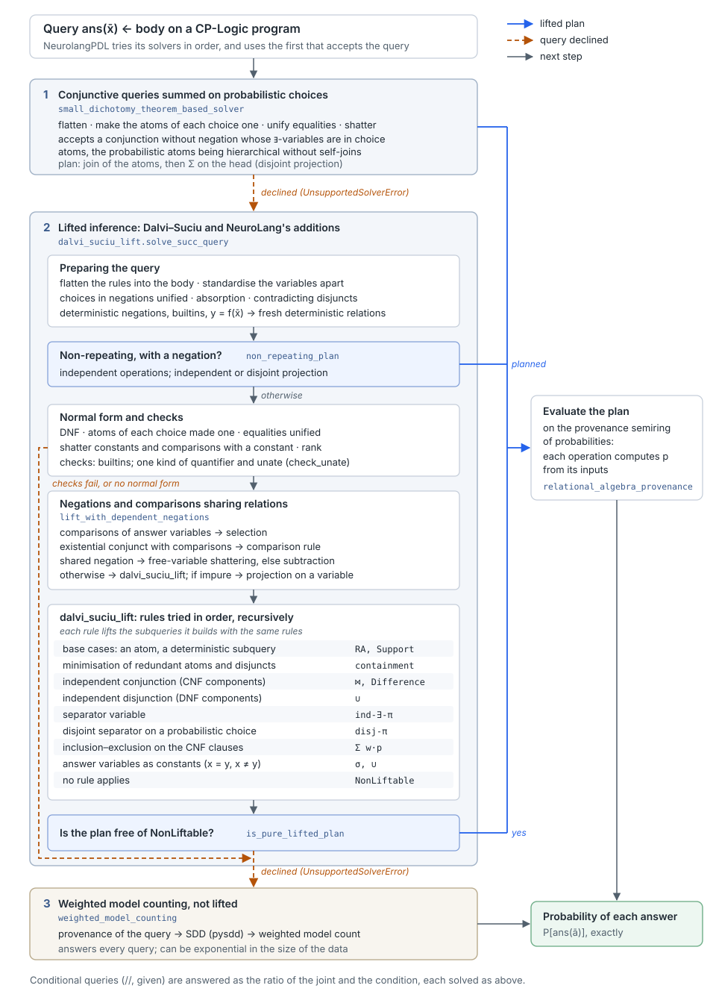

Lifted probabilistic inference#
This page lists the strategies NeuroLang uses to compute the probability of a query exactly by lifted inference, that is by translating the query into a plan of relational algebra operations on probabilities, without grounding the program into a propositional formula. It gives first the algorithms of the literature that NeuroLang implements, whose correctness is that of the papers cited, then NeuroLang’s own additions to them, each with the formula applied, when it applies and, in Correctness of the plans, its proof.
Note
EXPECT[f | a] = e and EXPECT_NORM (Datalog: A Rule-Based Query Language for NeuroLang, 5.5)
add no strategy and change no plan: the engine rewrites them, as it
rewrites a conditional query, into one
PROB rule over the event a, p(g, x, PROB(g, x)) :- a, which
is planned as any other, and an aggregation of f times its
probability over the answers. The expectation is
\(\sum_x f(g, x)\,P[a(g, x)]\) by linearity of the expectation,
which needs none of the independence or exclusivity hypotheses of the
plans, so an EXPECT is refused exactly when that PROB rule is.
Every variable of a is an answer variable of the rule, so it can be
planned where PROB[a] = p, which marginalises the \(x\), is
not: with r, s and t probabilistic facts,
EXPECT[1 | r(x), s(x, y), t(y)] = e is solved by the lifted
solvers, while PROB[r(x), s(x, y), t(y)] = p is refused.
Solvers and their order#
NeurolangPDL tries its solvers in order, and
uses the first one which accepts the query:
neurolang.probabilistic.small_dichotomy_theorem_based_solver, for conjunctive queries without negation whose existential variables all occur in atoms of probabilistic choices, which it computes by a join and a disjoint sum on the head (see Conjunctive queries summed on probabilistic choices);neurolang.probabilistic.dalvi_suciu_lift, which first plans non-repeating queries with negation (see Non-repeating queries with negation and Planning non-repeating queries), and otherwise lifts unions of conjunctive queries with self-joins (see The Dalvi–Suciu algorithm), with NeuroLang’s additions (see NeuroLang’s additions);neurolang.probabilistic.weighted_model_counting, which is not lifted: it compiles the provenance of the query into a sentential decision diagram (SDD) [Darwiche2011] with pysdd and computes its weighted model count [Chavira2008]. It answers every query of the language but can be exponential in the size of the data.


The lifting process. Each lifted solver either gives a plan, evaluated on the provenance semiring of probabilities, or declines the query, which is passed to the next solver. The steps of the second solver are described in Preparing the query, Planning non-repeating queries, Negations and comparisons sharing relations and The Dalvi–Suciu algorithm.#
A lifted solver declines a query by raising an
UnsupportedSolverError, such as NonLiftableException, and the next
one is then tried. The Dalvi–Suciu solver turns the failures of the
conversions to normal forms of a formula outside the fragment they support
(NotInFONegE), and the splits into components it cannot plan, such as a
union with a negated component, into NonLiftableException, so that
declining never depends on check_unate. Other errors are not caught: a
query body with a universal quantifier, given through the Python API, is
rejected when the query is flattened
(flatten_query() raises
UnsupportedProgramError), and weighted model counting is not tried
either. Lifted plans are
computed on the provenance semiring of probabilities
(neurolang.relational_algebra_provenance), whose operations are
listed in Operations of the lifted plans. Conditional queries (//,
given, conditioned to) are answered as the ratio of two such
queries, the joint and the condition.
The probabilistic semantics are those of CP-Logic [Vennekens2009], and the overall approach is described in [Zanitti2023]. Probabilistic facts are tuple-independent relations; probabilistic choices are relations with a single key-less block, where exactly one tuple is true, a special case of block-independent disjoint (BID) relations [Suciu2011].
Operations of the lifted plans#
Each operation computes the probability \(p\) of each tuple of its result from the probabilities of its inputs.
Operation |
Probability |
Used for |
|---|---|---|
|
\(p_1 \, p_2\) |
independent conjunction |
|
\(1 - (1 - p_1)(1 - p_2)\) |
independent disjunction |
|
\(p_1 \, (1 - p_2)\) |
independent negation, \(A \land \lnot B\) |
|
\(p_1 - p_2\) |
\(P[A] - P[A \land B]\), for dependent \(A\) and \(B\) |
|
\(1 - \prod_i (1 - p_i)\) |
existential quantifier on a separator variable |
|
\(\prod_i p_i\) |
not used by the implemented rules (see The Dalvi–Suciu algorithm, separator variable) |
|
\(\sum_i p_i\) |
projection of mutually exclusive tuples |
|
\(\sum_j w_j \, p_j\) |
inclusion–exclusion with Möbius weights |
|
\(1\) |
the tuples of a plan, to give values to its variables |
Algorithms from the literature#
The algorithms of this section are published with their proofs, which apply to the queries they are stated for: NeuroLang implements them, at times with restrictions, which are given, so that a query they decline is not necessarily #P-hard. NeuroLang’s additions extend them beyond these queries.
Conjunctive queries summed on probabilistic choices#
The first solver,
solve_succ_query(),
is a restriction of the disjoint projection of Suciu et al. (see
Disjoint projection on a probabilistic choice), and not an
implementation of the small dichotomy theorem, despite its name. It
accepts a query whose body, once flattened and the atoms of each
probabilistic choice made one (see Preparing the query), is a
conjunction without negation in which
every existential variable of an atom of a probabilistic fact relation also occurs in an atom of a probabilistic choice (
_verify_fact_and_choice_e_quantification);no existential variable occurs in deterministic atoms only (
_verify_deterministic_e_quantification);the probabilistic atoms form a hierarchical query without self-joins (
is_hierarchical_without_self_joins, see The small dichotomy theorem), a further restriction which the plan below does not need.
Its plan is the join of the atoms of the body, followed by the projection
on the head, which the provenance solver computes as a sum of the
probabilities of the tuples it merges
(RelationalAlgebraProvenanceCountingSolverMixin):
\(\bar z\) being the existential variables. This is the disjoint projection, exact because the merged tuples differ on the tuple of a choice and are mutually exclusive (see Correctness of the plans). No completeness is claimed for the solver: the hierarchical query \(\mathit{ans}(x) \leftarrow R(x, y) \land S(y)\) of probabilistic facts, for instance, is declined, as \(y\) occurs in no choice, and is lifted by the next solver. Queries with negations or disjunctions are declined too.
Once the join is ordered (RAQueryGOOOptimiser), the projection is
pushed through it (PushSumsThroughJoins): at each join, each side is
summed over the columns of its own that the projection drops, before the
two are joined, rather than the join of all the atoms summed at the end,
\(C(\cdot)\) being the columns of a plan (see Correctness of the plans). The decoding of an image, a voxel \(v\) chosen in it, each voxel active with its probability, and a study \(s\) hitting it if it activates the voxel chosen,
image_hit(s) :- image_voxel(v), image_active(v), activated(v, s)
p(t, PROB) :- (image_hit(s) & selected_study(s)) // (term_in_study(s, t) & selected_study(s))
is so summed over the voxels for each study, a sum of the joined image’s
size, before the join with the terms of the studies, as the join order
puts the voxels’ relations together. The greedy join ordering starts from
the join of two relations with the fewest rows at most, and adds at each
step the relation whose join with the joined ones has the fewest rows at
most: a set all of whose columns are columns of the other side matches
each of its rows at most once, so that image_active and then
activated are joined with image_voxel before the studies and their
terms, even when the image has more voxels than there are studies. Started
from the smallest relation, selected_study, the order joined its terms,
and then the activations of each study and term, before the image.
The small dichotomy theorem#
For a conjunctive query in which no relation occurs twice, on tuple-independent relations, the small dichotomy theorem applies [Dalvi2007] [Fink2014]: writing \(at(x)\) for the atoms in which variable \(x\) occurs, the query can be computed in polynomial time if it is hierarchical, that is if for any two variables \(x\) and \(y\),
and is #P-hard otherwise. Each connected component of a hierarchical query has a variable occurring in all of its atoms, on which it is computed by the independent projection, and recursively: this is the separator variable rule of The Dalvi–Suciu algorithm, restricted to queries without self-joins, and the projection of the planner of Planning non-repeating queries, which Fink and Olteanu’s extension of the theorem to negation (see Non-repeating queries with negation) justifies.
The Dalvi–Suciu algorithm#
dalvi_suciu_lift()
implements the algorithm of Dalvi and Suciu for unions of conjunctive
queries on tuple-independent relations [Dalvi2012]. The query is first
shattered and ranked, then its rules are tried in the order below, each
one calling the algorithm on the subqueries it produces. A query to which
no rule applies is marked NonLiftable and declined. Dalvi and Suciu
prove their algorithm complete for unions of conjunctive queries on
tuple-independent databases: a query on which it fails is #P-hard
[Dalvi2012]. The implementation restricts some of its rules, ranking and
inclusion–exclusion, so a query it declines is not necessarily #P-hard.
NeuroLang’s additions are tried in between: independent negation,
the disjoint separator and the guard on the clauses of the conjunctive
normal form (see Extensions of the Dalvi–Suciu algorithm).
- Shattering constants
An atom with a constant, such as \(R(x, a)\), is replaced by an atom of a new relation holding the tuples of \(R\) selected on that constant, so that the remaining atoms of \(R\) refer to disjoint sets of tuples [Dalvi2012] (
neurolang.probabilistic.shattering). The constants of a query with a negation are also shattered before the planner of non-repeating queries, and so before the unate check (see Planning non-repeating queries).- Ranking
The query must be ranked: there is an order on the bound variables such that the arguments of every atom follow it [Dalvi2012] (
neurolang.probabilistic.ranking). The answer variables, free, are constants for Dalvi and Suciu, and are not ordered: the query \(Q(x, y) = R(x) \land R(y) \land S(x, y) \land W(y, x)\) is ranked, and lifted, its answers with \(x \neq y\) and \(x = y\) apart (different_free_variables_plan). Nor are the variables of the atoms of probabilistic choices (_unordered_variables): a single tuple of a choice is true, and the disjoint projection on a choice makes them free, so \(\exists x, y\, C(x, y) \land S(y, x)\), with \(C\) a choice, is ranked and lifted as \(\sum_{a, b} p_C(a, b)\, p_S(b, a)\). Atoms with a repeated variable, such as \(R(x, x)\), are first replaced by atoms of a new relation holding the selected tuples. A query whose variables still occur in both orders, such as \(\exists x, y\, R(x, y) \land R(y, x)\), is then rewritten into an equivalent ranked query (rank_query()), following Dalvi and Suciu’s Proposition 4.2. The variables to rank are those occurring in both orders or repeated, together with the variables at the same positions of the other atoms of their relations. For every weak order of them, each atom \(R(\bar x)\) becomes an atom of the relation of the tuples of \(R\) whose values at those positions are in that order, and the variables of each rank are the same in every order; the query is the disjunction of these queries, one per order. For \(R(x, y) \land R(y, x)\), the orders \(x < y\), \(x = y\) and \(y < x\) give\[\exists x_1, x_2\, R_<(x_1, x_2) \land R_>(x_1, x_2) \;\lor\; \exists x_1\, R_=(x_1) \;\lor\; \exists x_1, x_2\, R_<(x_1, x_2) \land R_>(x_1, x_2),\]with \(R_<(x_1, x_2)\) standing for the tuple \(R(x_1, x_2)\) with \(x_1 < x_2\), \(R_>(x_1, x_2)\) for the tuple \(R(x_2, x_1)\) with \(x_1 < x_2\), and \(R_=(x_1)\) for the tuple \(R(x_1, x_1)\). The orders \(x < y\) and \(y < x\) give the same disjunct: in the first, \(x\) is \(x_1\) and \(y\) is \(x_2\); in the second, \(y\) is \(x_1\) and \(x\) is \(x_2\), and the atoms of \(R(x, y)\) and \(R(y, x)\) are exchanged. The ranked relations are computed on the data, each tuple keeping its probability (
_ranked_relation). A comparison of two ranked variables of a split atom is true or false in each order, and replaced by its truth value, the disjuncts of the orders it falsifies dropped (RankAtoms): with \(x < y\), \(\exists x, y\, R(x, y) \land R(y, x) \land x < y\) is \(\exists x_1, x_2\, R_<(x_1, x_2) \land R_>(x_1, x_2)\), whose pairs are independent, lifted as \(1 - \prod_{a < b} (1 - p(a, b)\, p(b, a))\).The query is declined, and left to the next solver, when a relation to split occurs within a negation; when a ranked position has a constant, or a comparison of a ranked variable with another term or a function has a ranked variable, or no order satisfies the comparisons; when an answer variable, or one of a choice, is at a ranked position, as in \(\exists y\, R(x, y) \land R(y, y)\), since the ranked relations do not shatter the constants it stands for; when the ranked columns are not all of real numbers or all of strings, the types with a total order and an equality, or contain NaN; or when more than
MAX_RANKED_VARIABLES, two, variables are to rank, as the number of orders, 1, 3, 13, 75…, makes planning exponential. Only variables in both orders in two atoms are detected, as in the check of rankedness: a cycle such as \(R(x, y) \land R(y, z) \land R(z, x)\) is not ranked, which the separator variable rule still checks. A bound and an answer variable in both orders, \(Q(x) = \exists y\, R(x, y) \land R(y, x)\), need no ranking, and are split on \(y = x\) and \(y \neq x\) by “answer variables as constants”.- Base cases
A single atom is read from its relation; a subquery whose atoms are all deterministic is computed by ordinary relational algebra, with probability 1.
- Minimisation
Redundant atoms and disjuncts are removed with the containment test of
neurolang.probabilistic.containment: a conjunctive query contains another when there is a homomorphism from the first into the second (Chandra and Merlin), and a union contains another when each disjunct of the second is contained in one of the first (Sagiv and Yannakakis). The base cases are then tried again.- Independent conjunction
With the query in conjunctive normal form, if its conjuncts split into components with no probabilistic relation in common, they are independent:
\[P[Q_1 \land Q_2] = P[Q_1]\,P[Q_2].\]- Independent disjunction
With the query in disjunctive normal form, if its disjuncts split into components with no probabilistic relation in common:
\[P[Q_1 \lor Q_2] = 1 - (1 - P[Q_1])(1 - P[Q_2]).\]- Plans of many components
The plan of \(n\) independent components is the join (the union) of their plans, whose probabilities multiply (\(1 - \prod_i (1 - p_i)\) for the union): tuple by tuple these operations are associative and commutative, so that any bracketing of the \(n\) plans gives the same probabilities, and the plan joins them in chunks of 16 consecutive components that share columns (
join_in_chunks, also used by the greedy ordering of the joins) instead of in a chain: the walkers that optimise and solve a plan recurse once per level of its tree, and a chain of about 250 joins exceeded the limit of the recursion. For at most 16 components, and where a component shares no column with the one before it, the plan is the chain, where a chunk would be a cross product. When the runs of components that share columns share none with each other, which is the case of independent components of different variables, their join is a product whatever the tree, and the runs are joined in chunks too. Otherwise the runs stay in a chain, except in the translation of a rule body to relational algebra, whose runs, when more than 16, are the operands of one n-ary join evaluated in the order of the chain (the solver of the plans takes no n-ary join).- Separator variable
A variable \(z\) is a separator variable of \(\exists z\,Q(z)\) if it occurs in every atom and, for each relation, in the same position of all of its atoms. The events \(Q(a)\) for different values \(a\) then concern different tuples and are independent:
\[P[\exists z\, Q(z)] = 1 - \prod_a (1 - P[Q(a)]).\]The atoms of a deterministic relation need not have \(z\), nor at the same position, in
find_separator_variables: a deterministic relation in two atoms, as \(\mathit{organ}\) in\[\exists g, d_1, d_2\, \mathit{te_{brain}}(d_1, g) \land \mathit{organ}(d_1, \mathit{brain}) \land \mathit{te_{blood}}(d_2, g) \land \mathit{organ}(d_2, \mathit{blood}),\]leaves \(g\) a separator variable, as it is with two deterministic relations (see Correctness of the plans).
When the plan of the subqueries is not pure, the rules that follow are tried on the query as it is. The plan algebra also has
IndependentProjectionUniversal, the dual projection for a universally quantified separator variable [Suciu2020], but it is not one of the implemented rules: the algorithm’s conversions to normal forms (convert_to_dnf_existential_ucq,convert_to_cnf_existential_ucq) accept FO∃¬ formulas only,convert_ucq_to_ccqrewrites universals as \(\lnot\exists\lnot\) before them, andseparator_variable_planchooses the universal projection only when the prenex form of the query has no existential quantifier, as for \(\lnot\exists y\, R(y)\), whose plan is then impure. No test of the lifting builds it. It would need the opposite convention for the support of a plan (see the probabilistic model in Correctness of the plans).- Inclusion–exclusion
For a conjunction \(Q_1 \land \dots \land Q_n\) in conjunctive normal form,
\[P\Big[\bigwedge_{i} Q_i\Big] = \sum_{\emptyset \neq S \subseteq \{1..n\}} (-1)^{|S|+1}\, P\Big[\bigvee_{i \in S} Q_i\Big].\]inclusion_exclusion_conjunction()converts each of the \(2^n - 1\) disjunctions \(f(S) = \bigvee_{i \in S} Q_i\) to disjunctive normal form, and orders them (_formulas_weights): \(T \preceq S\) when \(T \subseteq S\), or whenis_contained()finds that \(f(T)\) implies \(f(S)\), the relation being then closed transitively. The test is sound but not complete: a negated atom \(\lnot R(\bar x)\) is matched only by the same negated atom, through the relation \(\bar R\) ofNegatedSymbol(negations_as_atoms), and a disjunct with the negation of another formula, as \(\lnot\exists x\, R(x)\), is found contained in none. The disjunctions contained in each other are one term, lifted once, and the weight of each term is \(\mu(S) = 1 - \sum_{T \prec S} \mu(T)\) (mobius_weights,mobius_function), so that a term whose weight is 0 is not lifted. These cancellations remove terms that may be #P-hard while the conjunction is not [Dalvi2012]; a term that is not cancelled and that the algorithm cannot lift is markedNonLiftable, which makes the plan impure (is_pure_lifted_plan), and the query is declined unless another rule lifts it. The rule is applied only when all the conjuncts have the same free variables (_have_the_same_free_variables). Inclusion–exclusion with an incomplete containment test proves that the plan is exact although the containment test is not complete.
Disjoint projection on a probabilistic choice#
Suciu et al. [Suciu2011] (section 4.3.1) extend the algorithm to block-independent disjoint relations, of which a probabilistic choice is one block: the events of different tuples of a block are mutually exclusive, and for a conjunctive query with an atom \(C(\bar z)\) of a choice, \(\bar z\) being quantified,
NeuroLang applies it to unions of conjunctive queries as the disjoint separator (see Extensions of the Dalvi–Suciu algorithm).
Non-repeating queries with negation#
A query is non-repeating when none of its probabilistic relations occurs twice in it. Fink and Olteanu show that a non-repeating query without union, built from joins, projections and negations, on tuple-independent relations, can be computed in polynomial time if it is hierarchical, and is #P-hard otherwise [Fink2014] [Fink2016]. NeuroLang’s planner for these queries, which accepts more of them, is described in Planning non-repeating queries.
NeuroLang’s additions#
The rewritings and rules of this section are NeuroLang’s own: the references they cite give the techniques they build on, not their correctness, which is proved in Correctness of the plans. They are sound, but not known to be complete: some tractable queries may still be declined, and left to weighted model counting.
Preparing the query#
Before lifting, solve_succ_query()
rewrites the query as follows.
- Flattening
The rules the query depends on are unfolded into its body, giving a union of conjunctive queries in disjunctive normal form.
- Constants of the query
A rule is unfolded with the most general unifier of its head and the query’s atom, so that a constant of the query, as in
PROB[ind('a')], replaces the head variable in the whole body: the selection of the constant is pushed into the body, and the plan is that of the body for this constant, not of the rule for all values selected afterwards (FlattenQueryInNonRecursiveUCQ). A comparison of the body becomes then one of two constants, as \(d = \mathtt{a}\) or \(d = d\) for \(d = \mathtt{a}\), which is evaluated: a true one is removed, a false one makes the body false, and the rule gives no answer (FlattenQueryInNonRecursiveUCQ.comparison_of_constants, the truth values removed bySimplifyFlatQuery).The existential quantifiers of the variables of the body out of the head are then pushed down (
PushExistentialsDownConjunctionsMixin), \(\exists y\, (A \land B) \equiv A \land \exists y\, B\) for \(y\) not free in \(A\), and \(\exists x\, \exists y\, \varphi \equiv \exists y\, \exists x\, \varphi\). An outer quantifier is swapped through a chain \(\exists y_1 \dots \exists y_k\, \psi\), none of whose quantifiers moves into \(\psi\), only when it moves into \(\psi\) itself (_moves_into_matrix): the number of walks is then polynomial in \(k\) rather than \(2^k\), as for a deterministic atom with twenty columns that only it uses.- Absorption in negations
Conjuncts asserted outside a negation are removed from it, by the absorption law
\[A \land \lnot(A \land B) \equiv A \land \lnot B, \qquad A \land \lnot\exists y\,(A \land B) \equiv A \land \lnot\exists y\, B \quad (y \text{ not free in } A).\]The law holds in every interpretation, hence in every possible world. It removes, for instance, a probabilistic atom repeated within a negation, which can make the query non-repeating, the class of queries with negation for which Fink and Olteanu characterise liftability [Fink2016]. A negated conjunction all of whose conjuncts are asserted is a contradiction and is left unchanged (
AbsorbAssertedConjunctsInNegations).- Contradicting disjuncts
A disjunct with a negated conjunct \(\lnot A\), where \(A\) is one of its conjuncts or is asserted by the conjunction of which the disjunction is a conjunct, is removed:
\[A \land (B \lor (C \land \lnot A)) \equiv A \land B, \qquad B \lor (A \land C \land \lnot A) \equiv B,\]also through the existentials of the disjunct which do not quantify a variable of \(A\). A disjunction all of whose disjuncts are contradictions is left unchanged. The translation of a negated existential to rules gives such disjuncts: \(\lnot\exists y\,(B \land A)\), with \(y\) not free in \(A\), is \(\lnot\exists y\, B \lor \lnot A\), so that
\[A \land \lnot\exists y\,(B \land A) \equiv A \land (\lnot\exists y\, B \lor \lnot A) \equiv A \land \lnot\exists y\, B,\]which is the absorption in negations, after the translation. For instance, with a choice \(C\), the query \(T(s, t) \land C(s) \land \lnot\exists t_1\, (T(s, t_1) \land t_1 \neq t \land C(s))\) is rewritten without the choice in the negation, and is lifted by the projection on the choice (
RemoveContradictingDisjunctsMixin, inAbsorbAssertedConjuncts).- Deterministic negations
A negated conjunct \(\lnot N(\bar x)\) whose atoms are all deterministic relations or comparisons is the same relation in every possible world. With \(G(\bar x)\) the deterministic conjuncts of the query whose variables are among \(\bar x\), it is replaced by a fresh deterministic relation defined by a relational algebra expression,
\[D(\bar x) := G(\bar x) \land \lnot N(\bar x), \qquad G \land \lnot N \equiv G \land D,\]\(G\) being conjoined within the existentials of \(N\) so that they are range-restricted, as in \(\lnot\exists t_1\,(T(t_1) \land M(s, t_1) \land t_1 \neq t)\). The negation is left unchanged when no non-empty \(G\) binds all of \(\bar x\), for instance when \(N\) is closed (
neurolang.probabilistic.deterministic_subqueries). The expression is not evaluated while planning: marked withMaterialise, it is a subexpression of the plan, computed as a set when the plan is evaluated.- Deterministic builtins
The lifting rules plan comparisons but no other builtin, such as
startswith. The conjunction \(B(\bar y)\) of the builtins of a conjunction whose variables are among those of one of its deterministic atoms \(R(\bar x)\) is replaced with \(R\) by a fresh deterministic relation, defined as for the deterministic negations,\[D(\bar x) := R(\bar x) \land B(\bar y), \qquad R \land B \equiv D,\]so that
schaefer(l, r), startswith('17Networks LH Vis', l)in a probabilistic rule is lifted as when a deterministic rule selects the labels, instead of being solved by weighted model counting.An equality \(y = f(\bar x)\) of a variable with a function of other variables, all of them in an atom \(A\), deterministic or probabilistic, of the conjunction, is replaced by a fresh deterministic relation of the values of the function on the tuples of \(A\), the support of \(A\) if it is probabilistic:
\[F(\bar x, y) := \pi_{\bar x}(A) \land y = f(\bar x), \qquad A \land y = f(\bar x) \equiv A \land F(\bar x, y).\]\(F\) is a function of \(\bar x\), so that in \(R(x) \land T(y) \land y = x + 1\), \(y\) separates the query (see the separator determined by a functional dependency, in Extensions of the Dalvi–Suciu algorithm).
Two atoms of the same probabilistic choice relation are true together only if they are the same tuple, as exactly one tuple of the choice is true. Their arguments are therefore made equal (
lift_optimization_for_choice_predicates()). This holds for the atoms of a conjunction: the disjuncts of a disjunction are rewritten apart, and the atoms of a conjunction are not made equal to those within its disjunctions, since \(C(s) \lor C(f)\) does not need both to be true. A variable made equal to a constant is replaced by it, and two atoms that cannot be made the same tuple, as \(C(0, 0) \land C(0, 1)\) or \(C(x, x) \land C(0, 1)\), make the conjunction false.An atom \(C(\bar v)\) within a negated existential of a conjunction which asserts \(C(\bar u)\) is made \(C(\bar u)\), when the variables of \(\bar v\) that are not those of \(\bar u\) are quantified by the existential, which loses them:
\[C(\bar u) \land \lnot\exists W\, (C(\bar v) \land \psi) \equiv C(\bar u) \land \lnot\exists W'\, (C(\bar u) \land \psi) [\bar u/\bar v],\]and the absorption in negations then removes \(C(\bar u)\) from the negation. For instance, \(R(x) \land \lnot\exists t\, (R(t) \land S(x, t))\) becomes \(R(x) \land \lnot S(x, x)\). A negation in which the substitution makes a strict comparison of a term with itself, as \(s_2 \neq s\) becoming \(s \neq s\), is true, and is removed (
UnifyChoicesInNegations).A negated atom of a choice \(C\) is another tuple of \(C\), exactly one of its tuples being true:
\[\lnot C(\bar u) \equiv \exists \bar f\, (C(\bar f) \land \bar f \neq \bar u),\]\(\bar f\) fresh, after the absorption, so that a contradicting disjunct \(\lnot C(\bar s)\) is first removed (
NegatedChoicesAsOtherTuples). With one column, \(\bar f \neq \bar u\) is \(f \neq u\). The query \(\exists x\, R(x) \land \lnot C(x)\) becomes \(\exists f\, (C(f) \land \exists x\, (R(x) \land x \neq f))\), the disjoint projection on \(f\) of a query that the comparison rule lifts (see the projection on a variable, in Negations and comparisons sharing relations), with the probability\[1 - \sum_a p_C(a) \prod_{b \neq a} (1 - p_R(b)).\]With several columns, \(\bar f \neq \bar u\), that is \(f_1 \neq u_1 \lor \dots \lor f_n \neq u_n\), is a single comparison of the tuples \((f_1, \dots, f_n)\) and \((u_1, \dots, u_n)\), which the normal forms do not distribute over \(C(\bar f)\), and which the comparison rule selects as any other. The query \(\exists x\, R(x) \land \lnot C(x, 1)\) is the disjoint projection on \((f, g)\) of \(C(f, g) \land \exists x\, (R(x) \land (f, g) \neq (x, 1))\), with the probability
\[\sum_{(a, b)} p_C(a, b)\, \Big(1 - \prod_{c : (a, b) \neq (c, 1)} (1 - p_R(c))\Big).\]The comparison of tuples makes no single variable different from a term, so the comparison rule declines it when the existential conjunct shares a relation with the rest of the query, as in \(R(1) \land \exists x\, (R(x) \land \lnot C(x, 2))\). It also declines \(\exists x\, \exists y\, S(x, y) \land \lnot C(x, y)\), whose existential conjunct has two variables compared, although its probability, \(\sum_{\bar a} p_C(\bar a) (1 - \prod_{\bar b \neq \bar a} (1 - p_S(\bar b)))\), is computable.
- Equalities within disjuncts
The variables an equality makes the same are unified, in each disjunct of a union apart, as the equality holds in its disjunct only. A disjunct keeps its equalities if unifying them would replace a variable of the query’s head, which every disjunct shares.
- Checks
The query must have no built-in function, except comparisons within existential conjuncts (see Negations and comparisons sharing relations) and comparisons of the answer variables, conjuncts of the query (see Extensions of the Dalvi–Suciu algorithm). Unless the
check_unateoption of[PROBABILISTIC_SOLVER]is turned off (see Performance and Configuration), it must also use a single kind of quantifier and be unate, each relation occurring only positively or only negatively. The negations and comparisons of Negations and comparisons sharing relations are exempt from this check, as their rules check each query they lift, and so are the queries with a negation that are non-repeating once their constants are shattered, planned before it (see Planning non-repeating queries). Turning the option off disables these soundness checks: the rules are then applied to queries for which they are not proved, and can give wrong probabilities instead of declining the query to weighted model counting.- Comparisons with a constant
Shattering moves a comparison of a variable with a constant, such as \(y > 1\), into the atoms of a tuple-independent relation with that variable, as it does for \(y \neq 1\). Each comparison \(R.i\ \theta\ c\) of a column of \(R\) with a constant splits the tuples of \(R\) into those with \(R.i\ \theta\ c\) and those with its complement, \(<\) and \(\geq\), \(\leq\) and \(>\), \(\neq\) and \(=\), and the relation is split by the product of these partitions and of that of its constants. An atom of \(R\) is replaced by the disjunction of the atoms of the sets compatible with its constants and with the comparisons of its variables in its conjunction, which are then removed: a comparison of a variable in no such atom is kept. A comparison outside the existentials of its variable’s atoms, as in \(\exists y\, (\exists x\, (R(x) \land S(x, y)) \land y > 1)\) once the quantifiers are pushed down, is first moved into them, \(C \land \exists x\, \psi \equiv \exists x\, (C \land \psi)\), \(x\) being renamed apart from the variables of \(C\) (
FactorConjunctQuantifiers, the conjunction being then flattened), unless the conjunction has a negation or a disjunction. The query \(\exists x, y\, R(x) \land S_{>1}(x, y)\) is then lifted by the separator variable \(x\). A comparison \(c\ \theta\ y\) is first written \(y\ \theta'\ c\).- Constants a deterministic atom excludes
Before shattering, a conjunction gets \(v \neq c\) when a variable \(v\) is at a position of a tuple-independent atom where an atom of the same relation in the query has the constant \(c\), and a positive deterministic atom \(D(\ldots, v, \ldots)\) of the conjunction has \(v\) at a position of \(D\) where no tuple of \(D\) has \(c\) (
ExcludedConstants). Proof. \(D\) is deterministic, the same relation in every possible world, and no tuple of it has \(c\) at that position: in every world, an assignment satisfying the conjunction maps \(D(\ldots, v, \ldots)\) to a tuple of \(D\), hence \(v \neq c\). The conjunction implies the comparison, so that \(\phi \equiv \phi \land v \neq c\) in every world, and the probabilities are the same. Shattering then moves the comparison into \(v\)’s atoms (`Comparisons with a constant`_): an atom that could be the tuple of the constant’s atom only through \(v = c\) is replaced by the atom of the other tuples alone. In\[\exists t\, (S(0, t) \land T(t) \land S(t, l)),\]with \(T\) a deterministic relation without \(0\) (the regions of the thalamus, wired to the hippocampus and from them to a region \(l\)), \(t \neq 0\) makes \(S(t, l)\) an atom of \(S_{\neq 0}\): the self-join on \(S\) is gone, and the query is lifted by the separator \(t\) (12.9 s by weighted model counting on neurosynth, 1.3 s lifted). With \(0\) in \(T\), nothing is added and the query is declined, as before. The values of \(D\)’s column are read at planning time, as those of a `Separator determined by a functional dependency`_ are. Not covered: the Boolean query, \(\exists l\) being pushed onto \(S(t, l)\) alone, the comparison is not moved into it.
- Tuples deterministic atoms select disjointly
Before shattering, the atoms of a tuple-independent relation \(R\) in several atoms of the query are replaced by atoms of new relations, one per set of tuples of \(R\) they select, when these sets are pairwise disjoint (
rename_disjoint_restrictions()). The restriction of an atom \(R(u_1, \ldots, u_k)\) gives, for each position \(i\), the set \(V_i\) of the values allowed there: \(\{c\}\) for a constant \(u_i = c\); for a variable \(u_i = v\), the values at \(v\)’s position of the tuples, with its constants, of every positive deterministic atom \(D(\ldots, v, \ldots)\) in the scope of the atom, a conjunct of a conjunction with a formula containing the atom, \(v\) not quantified between them; all the values otherwise (AtomsInScope). The atom then becomes the atom \(R_V(u_1, \ldots, u_k)\) of the relation of the tuples of \(R\) with a value of \(V_i\) at each position \(i\), with their probabilities, computed on the data at planning time. This is done for a relation when its atoms have at least two restrictions, one of them by a deterministic atom, and any two restrictions allow disjoint sets of values at some position, so that the tuples they select are disjoint; otherwise, as when an atom of the relation is restricted by no deterministic atom, its atoms are left as they are. The values of a deterministic atom are those of each of its columns separately, which is sound but may miss a disjointness that only their combination shows. In the union\[\exists x, y\, R(x) \land S(x, y) \land D_1(y) \;\lor\; \exists x, y\, S(x, y) \land T(y) \land D_2(y),\]the query \(H_1\) of Dalvi and Suciu, #P-hard, with deterministic \(D_1\) and \(D_2\), the atoms of \(S\) have the restrictions \(D_1\) and \(D_2\) at \(y\)’s position. When no value is in both, the union is
\[\exists x, y\, R(x) \land S_{D_1}(x, y) \land D_1(y) \;\lor\; \exists x, y\, S_{D_2}(x, y) \land T(y) \land D_2(y),\]two disjuncts without a probabilistic relation in common, lifted by independent disjunction; otherwise it is declined, as before. In
\[\exists g, d_1, d_2\, \mathit{target}(X, g) \land \mathit{te}(d_1, g, \mathit{AD}) \land \mathit{organ}(d_1, \mathit{brain}) \land \mathit{te}(d_2, g, \mathit{AD}) \land \mathit{organ}(d_2, \mathit{blood}),\]with a single organ per dataset, the atoms of \(\mathit{te}\) become atoms of \(\mathit{te}\) on the datasets of the brain and of the blood, and the self-join is gone; with a dataset of both organs, the query is lifted as it is, by the separator \(g\). The proof is in Correctness of the plans.
Planning non-repeating queries#
The planner of non-repeating queries with a negation accepts
disjunctions, comparisons, constants, deterministic relations and
probabilistic choices, which the theorem of Non-repeating queries with
negation does not cover: its plans are proved correct in Correctness
of the plans, and it is not claimed to plan every tractable query.
Before the Dalvi–Suciu algorithm,
non_repeating_plan()
plans the non-repeating queries with a negation in this way. The negations
can be nested and can quantify variables, as in
\(\exists x\, R(x) \land \lnot\exists y\, (S(x, y) \land \lnot U(x,
y))\), whose quantifiers are mixed once the negations are moved to the
atoms, which the checks of the Dalvi–Suciu algorithm decline.
The query is first rewritten with two equivalences, which hold in every possible world and keep it non-repeating:
equalities with a quantified variable are eliminated in every subformula, \(\exists v\, (v = e \land \varphi) \equiv \varphi[e/v]\) for a variable or a constant \(e\), as in \(\lnot\exists u\, (W(s, u) \land u = t) \equiv \lnot W(s, t)\);
a negated disjunction is the conjunction of the negated disjuncts, \(\lnot(A \lor B) \equiv \lnot A \land \lnot B\), the disjuncts possibly having different free variables, as in \(M(s, t) \land \lnot(K(s) \lor G(s, t))\).
As the subformulas of a non-repeating query have different relations, they are independent, and the plan is built with the independent operations only:
a conjunction is the join of its positive conjuncts, filtered by its comparisons, from which its negated conjuncts are removed with
Difference, \(P[A \land \lnot B] = P[A]\,(1 - P[B])\);a disjunction of formulas with the same free variables is their independent union;
\(\exists \bar v\, (\varphi_1 \lor \varphi_2)\) is planned as \(\exists \bar v\, \varphi_1 \lor \exists \bar v\, \varphi_2\), each disjunct keeping the quantifiers of its variables. For instance, a negated predicate defined by two rules, \(N(s) \leftarrow F(s)\) and \(N(s) \leftarrow M(s, t)\), flattens to \(\lnot\exists t\, (F(s) \lor M(s, t))\), which is planned as \(\lnot F(s) \land \lnot\exists t\, M(s, t)\);
\(\exists \bar v\, \varphi\) is first split into the groups of conjuncts of \(\varphi\) connected by the variables of \(\bar v\), the other conjuncts being moved out of the quantifier. Each group is then projected on one of its variables \(v\) that occurs in every probabilistic atom of the group, including those within its negations: the events \(\varphi(a)\) for different values \(a\) concern different tuples, and the projection is independent, \(1 - \prod_a (1 - P[\varphi(a)])\). When a probabilistic choice conjunct of the group has \(v\), the events are mutually exclusive instead, and the projection is disjoint, \(\sum_a P[\varphi(a)]\). If no variable of the group occurs in all of its probabilistic atoms, as in the #P-hard \(\exists x\, R(x) \land \lnot\exists y\, (S(x, y) \land T(y))\), or if another condition fails, such as a comparison or a negation whose variables are not bound by the rest of its conjunction, or a choice atom with the variable that is not a conjunct of the group, no plan is given and the query is left to the Dalvi–Suciu algorithm.
Deterministic relations do not count as repetitions, and do not need to have the projected variable.
A query in which a tuple-independent relation occurs more than once is
first shattered on its constants, as by the Dalvi–Suciu algorithm (see
“Shattering constants” in The Dalvi–Suciu algorithm), and then planned
if it has become non-repeating. Shattering thus applies before the
non-repeating test, and before the unate check of the Dalvi–Suciu
algorithm, which the planned query does not reach. Atoms of a relation
with different constants at the same position become atoms of different
relations. With test_evidence, \(T\), tuple-independent and
drug_target, \(D\), deterministic, the query
pd_hit() :- drug_target('Tirofiban Hydrochloride', g), test_evidence(d, g, 'PD')
ad_hit() :- drug_target('Tirofiban Hydrochloride', g), test_evidence(d, g, 'AD')
good() :- pd_hit(), ~ad_hit()
flattens to \(\exists g, d\, (D(\mathit{tir}, g) \land T(d, g, PD)) \land
\lnot\exists g', d'\, (D(\mathit{tir}, g') \land T(d', g', AD))\), which repeats
\(T\) positively and negated, and was declined as not unate. Shattered,
it is \(\exists g, d\, (D(\mathit{tir}, g) \land T_{PD}(d, g)) \land
\lnot\exists g', d'\, (D(\mathit{tir}, g') \land T_{AD}(d', g'))\), non-repeating,
and planned as \(P[\mathit{pd\_hit}]\,(1 - P[\mathit{ad\_hit}])\).
The same constant in both atoms, as with 'PD' for two drugs sharing a
gene, leaves the relation repeated, and the query to the next rules. The
choices are not shattered, as in the Dalvi–Suciu algorithm, and a query
repeating a choice stays repeating.
In Datalog, the rules of a predicate share their head variables, so the negation of a predicate defined by several rules always has disjuncts with the same free variables once the quantifiers are pushed into them; disjuncts with different free variables only arise in queries built with the Python API.
Extensions of the Dalvi–Suciu algorithm#
- Independent negation
With the query in conjunctive normal form, a negated component sharing no probabilistic relation with the rest is independent of it:
\[P[Q_1 \land \lnot Q_2] = P[Q_1]\,(1 - P[Q_2]),\]computed with
Difference: the query is liftable when its positive and negated parts are (see Correctness of the plans). Fink and Olteanu study the converse, for queries with negation without repeated relations [Fink2014] [Fink2016].- Independent components apart
The conjunctive normal form of a query is split into components that have no probabilistic relation in common, and the plans of the components are joined (the independent join of [Dalvi2012]). When some component is not lifted, the rules below are tried on the query as it is, which they need when a component binds the variables of another, as \(C(x, y)\) the tuples of the disjunction \(R(x) \lor T(y)\), whose disjuncts have different columns, and so no plan (see “Unions of plans with the same columns” below). They are tried apart on the groups of components that depend on each other: two components do when they share free variables and one has a union whose disjuncts have different columns (
_union_has_the_same_columns), which the other binds, directly or through others. The groups are independent for each value of the free variables, which they may share:\[P[(Q_1 \land \dots \land Q_m)\theta] = \prod_i P[Q_i\theta],\]which the join of their plans on these variables computes. A query with a single group is tried as it is. The inclusion–exclusion of a conjunction is exponential in the number of its clauses: with \(n\) independent atoms \(U_i(z_i)\), or \(U_i(w, z_i)\) with an answer variable \(w\) that the core has, next to a query that is not liftable, such as \(R(x) \land S(x, y) \land T(y)\), it enumerated the subsets of the \(n + 1\) clauses before declining,
dalvi_suciu_liftbeing called 1, 11, 30, 180 and 966 times for \(n\) = 0, 1, 2, 4 and 6, and now \(4n + 3\) times. The answers \(z\) of the union of \(h(z) \leftarrow C(x, y) \land R(x) \land T(z)\) and \(h(z) \leftarrow C(y, x) \land T(x) \land T(z)\), with \(C\) a probabilistic choice, were declined because the component of \(z\) kept the rules from the union of the choice: they are lifted. The proof is in Correctness of the plans.- Disjoint separator
The counterpart, for probabilistic choices, of the separator variable (
disjoint_separator()). A choice cannot have a separator variable: the events of different values of its variables are exclusive, not independent. In the prenex form \(\exists \bar y\, \bigvee_i Q_i\) of a union, the atoms of a choice \(C\), one in each disjunct, are made the same atom \(C(\bar z)\) by renaming the quantified variables of each disjunct into those of the first. The events \(\bigvee_i Q_i(\bar a)\) for different values \(\bar a\) of \(\bar z\) are then exclusive and\[P\Big[\exists \bar z\, \bigvee_i Q_i\Big] = \sum_{\bar a} P\Big[\bigvee_i Q_i(\bar a)\Big]\]This is the disjoint projection of Suciu et al. (see Disjoint projection on a probabilistic choice), applied here to a union of conjunctive queries, as the separator variable is to unions; its proof is in Correctness of the plans. When the atoms of the disjuncts other than the choice atoms are deterministic, \(P[C(\bar a) \land D(\bar a)] = P[C(\bar a)]\,[D(\bar a)]\): the plan joins the choice with the deterministic union \(D\), in a single projection, whatever the number of disjuncts. \(D\) is a fresh deterministic relation, computed as a set (marked with
Materialise, as the deterministic subqueries above) when the tuples of its relations are known as sets, and otherwise as the support of its plan. Otherwise the union is lifted for every \(\bar a\) by the other rules. When they decline it and no other atom has the relation of a choice atom, the rest is independent of the choices: \(P[\bigvee_i (C(\bar a) \land R_i(\bar a))] = P[C(\bar a)]\, P[\bigvee_i (D_C(\bar a) \land R_i(\bar a))]\), \(D_C\) the deterministic relation of the tuples of \(C\). This gives every disjunct of the rest the variables of \(C\), as a union needs: \(\exists x, y\, (C(x, y) \land R(x)) \lor \exists x, y\, (C(y, x) \land T(x))\), renamed into \(\exists x, y\, C(x, y) \land (R(x) \lor T(y))\), has the rest \(R(a) \lor T(b)\), whose disjuncts have different columns, lifted as \((D_C(a, b) \land R(a)) \lor (D_C(a, b) \land T(b))\). The rule applies when every disjunct has an atom of the choice, at each position either a quantified variable or the same free variable or constant in all of them, and every free variable of the query. A free variable or a constant \(u\) of a choice atom, at a position where another disjunct has a quantified variable, is made one, \(C(u) \equiv \exists f\, (C(f) \land f = u)\), \(f\) being fresh; with another atom \(C(a)\) of the choice in the disjunct, \(C(a) \land C(f) \equiv C(a) \land a = f\) and \(\exists f\, (f = a \land \varphi) \equiv \varphi[a/f]\) then give \(C(a) \land a = u\) (ChoiceTermsAsEqualities, one rule per equivalence). The equalities, as comparisons, are the same in every world and belong to the deterministic rest; a union with them and a rest which is not deterministic is declined. It is tried after the separator variables, a conjunctive query being the union of a single disjunct.- Clauses of the conjunctive normal form
The conjunctive normal form \(K_1 \land \dots \land K_n\) of a union is used to remove redundant atoms, to split it into independent components, and for inclusion–exclusion. The clauses are lifted apart, each into a relation of its free variables, and then joined. A clause that is a disjunction with a negated atom none of whose variables a positive atom of the same disjunct binds, such as \(\exists s\, M(s, t) \lor \lnot L(t)\), is not safe range: its answers are not a finite set of values of \(t\), though the conjunction it comes from is (another clause binds \(t\)). The conversion makes such clauses from safe rules when it factors out an atom they share, as in \((M(s, t) \land C(s) \land \lnot L(t)) \lor (M(s', t) \land C(f) \land M(f, c))\). The normal form is then not used (
_clauses_are_range_restricted): the rules that follow, the disjoint separator among them, apply to the union as it is, and a union none of them lifts is declined, which is sound. They also apply when the components of the normal form are not all lifted. A negation alone as a clause is not a disjunction, and is the difference of a conjunction.- Answer variables as constants
Dalvi and Suciu lift a query for each answer, its free variables being constants [Dalvi2012]. Two atoms of a tuple-independent relation with free variables \(x\) and \(y\) at the same position, such as \(\exists s\, A(x, s) \land A(y, s)\), are then different tuples when \(x \neq y\), and the same when \(x = y\), which the algorithm, keeping the variables, cannot tell (
different_free_variables_plan). When the other rules decline the query \(Q\), its answers are split on the equalities among the free variables \(x_1, \dots, x_k\) at that position of the atoms of the relation \(R\): one branch per partition \(\Pi\) of them into blocks (_set_partitions). In a branch, each variable is replaced by the first variable of its block, its representative, \(Q[\Pi]\), and the atoms of \(R\) with a representative there, but the first, are renamed into those of an alias of \(R\) for each representative, \(\rho\). For two variables, the partitions are \(\{x\}, \{y\}\) and \(\{x, y\}\), and the plan is\[\sigma_{x \neq y}\, \mathrm{lift}(Q[R'/R]) \;\cup\; \pi_{y := x}\, \mathrm{lift}(Q[x/y]);\]in general, with \(r_1, \dots, r_m\) the representatives of \(\Pi\), and the projection copying each into the variables of its block,
\[\bigcup_{\Pi}\, \pi_{\Pi}\, \sigma_{\bigwedge_{j < l} r_j \neq r_l}\, \mathrm{lift}(Q[\Pi][\rho]).\]The rule applies when, in every branch, every renamed atom is a different tuple from the other atoms of \(R\), having its representative where they have another (
_are_different_tuples_when_different). A variable at that position in an atom of \(R\) that is not free, as \(z\) in \(A(x, s) \land A(y, s) \land A(z, s)\), prevents it. The number of branches is the Bell number of \(k\), 2, 5, 15 and 52 for 2, 3, 4 and 5 variables; more thanMAX_ANSWER_VARIABLES_AT_A_POSITION, 4, variables at a position are declined, the plan of 52 branches being deeper than the recursion limit of the walkers.A single free variable \(x\) and a single variable \(y\) of the existential prefix of a conjunctive query at that position are split so too: \(y\) is made free, the branches are those of \(\{x\}, \{y\}\) and \(\{x, y\}\), and their union is projected on the free variables of \(Q\). For \(Q(x) = \exists y\, R(x, y) \land R(y, x)\), the plan is
\[\mathrm{ind}\text{-}\pi_{x}\big(\sigma_{x \neq y}\, \mathrm{lift}(R(x, y) \land R'(y, x)) \;\cup\; \pi_{y := x}\, \mathrm{lift}(R(x, x))\big),\]\(1 - (1 - p(x, x)) \prod_{y \neq x} (1 - p(x, y)\, p(y, x))\). It applies when the events of different values of \(y\) have different tuples (
_partition_plan): \(y\) is a separator variable of the branch \(\{x\}, \{y\}\) once renamed (_is_separator_variable), and every atom of \(Q\) has \(y\) at a position where the atoms of the branch \(\{x, y\}\), of the same relation, have \(x\) (_are_different_tuples_when_different). The chain \(\exists y, z\, R(x, y) \land R(y, z)\) fails the latter, \(R(x, y)\) and \(R(x, z)\) possibly being the same tuple.- Comparisons of answer variables
A comparison of free variables, a conjunct of the query such as \(l_1 < l_2\), is a selection of the answers of the rest of the query, which is lifted without it.
- Separator determined by a functional dependency
A deterministic atom \(F(x, y)\) whose relation is a function of \(x\), \(y\) being the same for all the tuples with the same \(x\), determines \(y\) from \(x\): in a conjunctive query, an atom \(R(x)\) of a tuple-independent relation is then counted as having \(y\) when looking for a separator variable (
_determined_variables). In\[\exists p\, \exists s\, \mathit{reliable\_peak}(p) \land \mathit{peak\_study}(p, s) \land \mathit{term\_in\_study}(t, s),\]each peak being reported by one study, \(s\) separates the query, which is otherwise the #P-hard query \(H_0\) with a deterministic middle relation. Olteanu, Huang and Koch lift such queries, without self-joins, under functional dependencies [Olteanu2009b]. The dependency is checked on the data of the relation, a deterministic subquery being computed for it; it is followed through several deterministic atoms, and from several columns. An atom of a choice keeps its variables, its tuples being exclusive for all the values of \(y\). The variables are determined by the atoms which are not negated and are conjuncts of every clause, of the disjunctive normal form of the union, with the relation of the atom; in
\[\exists y\, \exists x\, (R(x) \land G(x, y) \land T(y)) \lor (R(x) \land G(x, y) \land U(y)),\]\(G\) determines \(y\) from \(x\) in both clauses with \(R\), and \(y\) separates the query, whereas an \(H(x, y)\) instead of \(G(x, y)\) in the second clause leaves \(R(x)\) without \(y\). The separator variables of every probabilistic atom, if any, are separated before the others, which they determine in the subqueries.
- Unions of plans with the same columns
A union of plans, of the disjuncts of a deterministic formula or of the connected components of a disjunctive normal form, is only planned when every disjunct has all the free variables of the union: the plans are relations of their free variables, and \(A(s, r) \lor M(s)\) holds for every \(r\) when \(M(s)\) does, which a union of the relations of \((s, r)\) and of \((s)\) cannot give. Such a disjunction comes from the conjunctive normal form of a safe union of rules, as \((R(r) \land C(s) \land A(s, r)) \lor (R(r) \land C(s) \land M(s))\), factoring \(R(r)\) out of it (
_union_has_the_same_columns). It is declined, which is sound: the other rules apply to the formula, or another solver does.
Negations and comparisons sharing relations#
lift_with_dependent_negations()
extends the algorithm to conjunctions \(A \land \lnot N\) in which the
negated conjunct \(N\) shares probabilistic relations with \(A\),
and to existential conjuncts with comparisons such as \(t \neq x\).
Such conjunctions fall outside unions of conjunctive queries, so the
completeness result above does not apply to them.
The rules below are tried in turn when the relations shared are
tuple-independent; a conjunction sharing a probabilistic choice, which
the rewriting of the choices in negations (see Preparing the query)
leaves, is declined. Every rule checks each query it lifts, and the lifted plans are
sound (see Correctness of the plans), but the rules are not known to be
complete: some liftable conjunctions of this kind may still be declined
and left to weighted model counting.
- Comparisons in an existential conjunct
For \(A \land \exists t\,(\psi(t) \land C)\), or its negation, where \(C\) is a conjunction of comparisons between \(t\), the free variables and constants, e.g. \(P(x, y) \land \lnot\exists w\,(P(w, y) \land w \neq x)\). Following Olteanu and Huang [Olteanu2009], with \(L\) the plan of \(A\), the event \(E = \exists t\,(\psi(t) \land C)\) is computed as
\[E = \text{ind-}\pi\;\sigma_C\big(\mathrm{lift}(\psi(t)) \bowtie \mathrm{support}(L)\big)\]and the plan is \(L \bowtie E\), or \(\mathrm{Difference}(L, E)\) when negated. It applies when \(t\) is a separator variable of \(\psi\), and when each probabilistic atom of \(\psi(t)\) has \(t\) in a position where the atoms of the same relation in \(A\) have a term that \(C\) makes different from \(t\), so that \(E\) and \(A\) concern different tuples. A positive conjunct can have free variables that \(A\) has not, if they are in the atoms of \(\psi\) (
_split_comparison_conjunct), as \(y\) in \(C(f) \land \exists x\, (S(x, y) \land x \neq f)\): \(E\) is then projected on them too, and joined with \(L\). Comparisons that are conjuncts of the query select the plan of the rest, which must have their variables (_lift_with_dependent_negations): a comparison with a variable that only another conjunct of an enclosing conjunction has, as \(x \neq f\) in the separator projection of \(\exists x\, (S(x, y) \land x \neq f)\), is left to the comparison rule.- Free-variable shattering
For \(A \land \lnot\exists t\,\psi(t)\) where the shared atoms have a free variable \(x\) of \(A\) in the position of \(t\), such as \(R(x) \land \lnot\exists t\,(R(t) \land S(x, t))\). Splitting the existential on \(t = x\) and \(t \neq x\), as shattering does [Dalvi2012],
\[\exists t\,\psi(t) \equiv \psi(x) \lor \exists t\,(t \neq x \land \psi(t)),\]gives the plan, with \(L = \mathrm{lift}(A \land \lnot\psi(x))\),
\[\mathrm{Difference}\Big(L,\ \text{ind-}\pi\;\sigma_{t \neq x} \big(\mathrm{lift}(\psi(t)) \bowtie \mathrm{support}(L)\big)\Big).\]It applies when \(t\) is a separator variable of \(\psi\), and when, for \(t \neq x\), each probabilistic atom of \(\psi(t)\) is a different tuple from the atoms of the same relation in \(A\) and \(\psi(x)\), the second part being then independent of \(L\).
- Negation by subtraction
For any \(A \land \lnot N\), as \(A \land N\) implies \(A\),
\[P[A \land \lnot N] = P[A] - P[A \land N],\]computed with
Subtractionwhen both \(A\) and \(A \land N\) are liftable.- Existential shattering
For a positive existential conjunct \(A \land \exists t\,\psi(t)\) sharing relations with \(A\), which the Dalvi–Suciu algorithm declines,
\[P[A \land \exists t\,\psi(t)] = P[A] - P[A \land \lnot\exists t\, \psi(t)],\]the latter being planned by free-variable shattering.
- Projection on a variable
When the rules above decline \(\exists X\, \varphi\), it is planned by projecting the plan of \(\varphi\), lifted with all the rules of this page, on variables of \(X\) made free (
projection_plan()). The quantifiers of the conjuncts of the query are first gathered, \(A \land \exists X\, \psi \equiv \exists X\, (A \land \psi)\) (FactorQuantifiersMixinofneurolang.logic.transformations), which holds as the query is standardised apart: a closed conjunct, such as an atom added by magic sets, does not prevent the projection. They are gathered at any depth of conjunctions, as the existential of a rewritten negated choice in \(\exists x\, (R(x) \land \exists f\, (C(f) \land f \neq x))\) (_existential_variables_and_body), and the quantifiers of the variables not made free are pushed down again in the body to lift (PushQuantifiersDown, in_projected_plan): \(\exists x\, (R(x) \land x \neq f) \land C(f)\). The projection isdisjointly, when a conjunct of \(\varphi\) is an atom \(C(\bar u)\) of a probabilistic choice \(C\) with variables \(X'\) of \(X\), and \(C\) occurs nowhere else:
\[P[\exists X\, (C(\bar u) \land \varphi')] = \sum_a P[(C(\bar u) \land \exists (X - X')\, \varphi')[a/X']];\]exclusively, when \(\varphi\) has the conjuncts \(R(\bar u)\), whose only variable of \(X\) is \(v\), and \(\lnot\exists w\, (R(\bar u[w/v]) \land w \neq v)\), or with \(w < v\) or \(w > v\): the values of \(v\) for which \(\varphi\) holds are unique, and
\[P[\exists X\, \varphi] = \sum_a P[(\exists (X - \{v\})\, \varphi)[a/v]];\]independently, when the conjuncts \(\psi\) of \(\varphi\) with variables of \(X\) share no probabilistic relation with the others, \(A\), and a variable \(v\) of \(X\) is in all the probabilistic atoms of \(\psi\), within its negations and existentials too, at a common position for any two atoms of a relation:
\[P[\exists X\, (A \land \psi)] = P[A]\, \Big(1 - \prod_a \big(1 - P[(\exists (X - \{v\})\, \psi)[a/v]]\big)\Big).\]
An order comparison between atoms, as in \(\exists x\, \exists y\, (R(x) \land T(y) \land x < y)\), is projected exclusively on the least value of \(x\) for which \(R(x)\) holds (
_extremum_conjunct). In general, a side of the comparisons can be a subquery: let \(K\) be the conjuncts of \(\varphi\) with \(v\) but its comparisons, and those connected to them by the other variables \(Y\) of \(X\) in \(K\). When no comparison with \(v\) has a variable of \(Y\), and \(v\) is the lesser side of every comparison with it, \(v < t\) or \(v \leq t\), \(t\) being a term without \(v\), as \(x + 1\),\[\exists X\, \varphi \equiv \exists X\, \big(\varphi \land \lnot\exists w\, \exists Y'\, (K[w/v, Y'/Y] \land w < v)\big),\]and the same with \(w > v\), the greatest value, when it is the greater side of every comparison. This holds for any \(K\); to choose a variable whose rewritten query lifts, \(v\) is only taken when \(K\) is an atom \(R(\bar u)\) whose only variable of \(X\) is \(v\), or when \(v\) separates \(\exists Y\, K\), its events for different values of \(v\) having different tuples (
_separates): in \(R(x) \land S(x, y) \land T(z) \land y < z\), \(y\) is not taken, \(R(x)\) being in \(K\) for every value of \(y\), and the projection is on the greatest \(z\) of \(T(z)\); in \(S(x, y) \land V(z, w) \land y < w\) it is on the greatest \(w\) of \(\exists z\, V(z, w)\); in \(R(x) \land T(y) \land \lnot U(y) \land x < y\) on the least \(x\), or on the greatest \(y\) of \(T(y) \land \lnot U(y)\). The comparison rule then lifts the query with \(v\) free, and, for tuple-independent \(R\) and \(T\),\[P[\exists x\, \exists y\, (R(x) \land T(y) \land x < y)] = \sum_a p_R(a) \prod_{b < a} \big(1 - p_R(b)\big) \Big(1 - \prod_{c > a} \big(1 - p_T(c)\big)\Big).\]Olteanu and Huang [Olteanu2009] prove tractable a class of conjunctive queries without self-joins with inequalities, which includes this one, and compute them in one scan of the relations sorted on the values compared, with running products; the plan here computes the products \(\prod_{b < a}\) with a join on \(b < a\) instead, in quadratic time, with the existing operators. The answer variables can be in \(R(\bar u)\), e.g. \(\exists x\, \exists y\, (V(s, x) \land T(y) \land x < y)\). A chain such as \(R(x) \land T(y) \land U(z) \land x < y \land y < z\) is lifted by applying the rule twice: the projection on the least \(x\) leaves \(\exists y\, \exists z\, (T(y) \land U(z) \land y < z)\) in its body, a query of the same form, whose quantifiers the projection plan pushes back down (
PQD). Pushing an existential \(\exists y\) down keeps with a negation of \(y\) the conjuncts sharing a variable with it, so that the negation stays range restricted, but not those sharing a variable with another negation only, such as the conjunct added for the least \(x\) in \(R(x) \land T(y) \land \lnot U(y) \land x < y\) (PushExistentialsDownConjunctionsMixin): \(\exists y\, (A \land B) \equiv A \land \exists y\, B\) when \(y\) is not free in \(A\).Comparisons as relations. The comparison of \(v\) projected with a quantified variable \(t\) may be the only conjunct binding \(v\) in a subquery: in \(T(z) \land \exists x\, (R(x) \land \exists y\, (S(x, y) \land y < z))\), \(y\) is no separator, and the plan of the subquery would select on a column \(z\) it does not have. When the projected query does not lift, each such comparison \(t \lhd v\) is replaced by a deterministic atom \(L(t, v)\), of the values of \(t\) and \(v\) in the tuples of conjunct atoms \(A(t)\) and \(B(v)\) which satisfy it (
_comparisons_as_relations, the relations of the atoms replaced by their tuples, as for the disjoint separator):\[A(t) \land B(v) \land t \lhd v \equiv A(t) \land B(v) \land L(t, v).\]The subquery is then lifted with \(v\) free, here \(\exists x\, R(x) \land \exists y\, (S(x, y) \land L(y, z))\) with the separators \(x\) then \(y\), deterministic atoms not counting, so that
\[P[\exists x\, \exists y\, \exists z\, (R(x) \land S(x, y) \land T(z) \land y < z)] = \sum_m p_T(m) \prod_{c > m} \big(1 - p_T(c)\big)\, P[\exists x\, R(x) \land \exists y\, (S(x, y) \land y < m)].\]Like the projection on the least value, \(L\) has the pairs of the relations in order, in quadratic time. Declined remain, for instance, two comparisons between the variables of two subqueries, \(S(x, y) \land V(z, w) \land y < w \land x < z\), subqueries independent for no value of the variable compared on either side, \(R(x) \land S(x, y) \land V(z, w) \land U(z) \land y < w\), and a comparison with a constant shattered into the relation of the atom binding \(t\), whose tuples are not known as a set, and a comparison kept within an existential with a negation sharing its variable, \(S(x, y) \land \lnot W(x, y) \land T(z) \land y < z\).
At least k. Let \(\psi(x, Y)\) be a conjunction of atoms and comparisons whose quantified variables are \(x\) and variables \(Y\) of its own, with \(x\) a separator of \(\exists x\, \exists Y\, \psi\) (the projection on \(x\) that
_separator_projection_planplans), and \(A\) the conjuncts without quantified variables that share no relation with \(\psi\). The query \(Q_k\) with \(k\) copies \(\psi(x_i, Y_i)\), the same conjuncts up to the renaming of \(x\) and \(Y\) (_copies_by_quantified_variable: the copies are the components of the quantified variables connected by the conjuncts, matched by the permutations of at most four variables \(Y\)), \(A\), and one strict comparison of each pair \(x_i, x_j\), \(\neq\), \(<\) or \(>\), satisfied by some order of \(x_1, \dots, x_k\), holds when \(\exists Y\, \psi(a, Y)\) holds for at least \(k\) values \(a\) of \(x\): it is the aggregation-free rewriting ofHAVING COUNT(*) >= k[Re2009] (for \(k = 2\), \(R(\bar u) \land R(\bar u[y/x]) \land x \neq y\), at least two tuples). Writing \(p_a = P[\exists Y\, \psi(a, Y)]\), the probability is \(P[A]\) times the Poisson-binomial tail\[P[Q_k] = P[A]\; T_{n,k}, \quad T_{i,j} = (1 - p_i)\, T_{i-1,j} + p_i\, T_{i-1,j-1}, \quad T_{i,0} = 1, \; T_{0,j} = 0 \; (j > 0),\]computed by
ThresholdProjectionin \(O(nk)\) time for the \(n\) values \(a\) of the plan of \(\exists Y\, \psi(x, Y)\) with \(x\) free (_at_least_plan), grouped by the free variables, the join with the plan of \(A\) being that of the separator projection, with only \(x\) as a candidate separator (a variable of \(Y\) may separate \(\psi\) too, as \(y\) of \(R(x, y)\), and is not the one counted). It replaces a recursion on \(k\) of \(O(n^k)\) time, which limited \(k\) to 4. For instance, at least three studies mentioning a term,\[\exists s_1\, \exists s_2\, \exists s_3\, (\mathrm{mentions}(s_1, t) \land \mathrm{mentions}(s_2, t) \land \mathrm{mentions}(s_3, t) \land s_1 \neq s_2 \land s_2 \neq s_3 \land s_1 \neq s_3),\]is lifted for each term \(t\), and so is at least five, or at least a hundred, in time linear in the number of studies; so are \(\mathrm{mentions}(s, t) \land D(t, s)\) with \(D\) deterministic, \(\mathrm{mentions}(s, \text{`pain'})\), whose constant shattering makes a variable of \(Y\), and \(\exists y\, S(x, y)\). The query is declined, and left to the other solvers, when \(x\) is not a separator, as in \(R(x) \land S(x, y) \land T(y)\), where the events of two values share \(T\); when the copies differ; and without a comparison of each pair, as in \(x_1 \neq x_2 \land x_2 \neq x_3\), satisfied by \(x_1 = x_3\), or with comparisons no order satisfies, as in \(x_1 < x_2 < x_3 < x_1\). The query language writes it
PROB[COUNT(x) >= k | a(x)] = p(Datalog: A Rule-Based Query Language for NeuroLang, 5.2.1), and the other comparisons of the count as the complements \(1 - P[Q_k]\), \(P[Q_k] - P[Q_{k+1}]\), of at least \(k\) and \(k + 1\).At least k or a filtered value. In a disjunction, the query \(Q_k\) above with a disjunct \(A = \exists x\, (R(\bar u) \land \varphi(x))\), \(\varphi\) a conjunction of deterministic atoms whose only variable is \(x\), is rewritten before shattering (
AtLeastOutsideAFilter):\[A \lor Q_k \equiv A \lor Q_k[R'/R], \qquad R'(x, \bar v) := R(\bar u) \land \lnot\varphi(x),\]\(\bar v\) being the free variables of \(R(\bar u)\). \(R'\) is a fresh tuple-independent relation, the tuples of \(R\) with the constants of \(\bar u\) and a value of \(x\) outside \(\varphi\), with their probabilities, defined by a relational algebra expression marked with
Materialise, as the deterministic negations are. \(A\) and \(Q_k[R'/R]\) then have no probabilistic relation in common, and\[P[A \lor Q_k] = 1 - (1 - P[A])\,(1 - P[Q_k[R'/R]]),\]the independent union of the plan of \(A\) and of that of
_at_least_planon \(R'\), the shape it lifts, its constants being in \(R'\). The independent disjunction ofdalvi_suciu_liftlifts its components withdalvi_suciu_lift, which does not try_at_least_plan; when no other rule lifts a disjunction,_independent_disjunction_plan, tried after the projections, lifts each component with every rule, a component that is a negation being declined as there; the comparisons of a disjunct within its existentials pass the check of the builtins, as those of an existential conjunct do. The rewrite applies when \(R\) is a tuple-independent relation known as a set, the atom of \(A\) is that of \(Q_k\) with \(x\) renamed, and \(R\) is in no other atom of the query, which \(R'\) would make look independent of it. Without \(\varphi\), \(Q_k\) implies \(A\) and is removed. For instance, evidence for a gene and a disease in a brain dataset, or in at least two datasets,brain_ev() :- test_evidence(d, 'G', 'D'), dataset_organ(d, 'brain') two_ev() :- test_evidence(d1, 'G', 'D'), test_evidence(d2, 'G', 'D'), (d1 != d2) q() :- brain_ev() q() :- two_ev()
is the independent union of the brain datasets and of at least two of the other datasets. Not covered: a filter with another variable, as \(M(x, z)\) with \(z\) free or quantified, or with a negation, a disjunct \(A\) with conjuncts on other probabilistic relations, several filtered disjuncts, a probabilistic choice \(R\), and a third atom of \(R\), such as a disjunct \(R(\text{blood1}, G, D)\). \(Q_k\) alone with constants,
two_evabove, is still declined: shattering replaces each constant by a quantified variable of the copies.For instance, the segregation of a term on the selected study,
\[\exists s\, \mathrm{mentions}(s, t) \land \mathrm{selected}(s) \land \lnot\exists s_2\, (\mathrm{mentions}(s_2, t) \land s_2 \neq s),\]is the disjoint projection on \(s\) of a query that the comparison rule lifts once \(s\) is free; with \(t\) projected too, an independent projection on \(t\) follows. Without the choice, \(\exists s\, \mathrm{seg}(t, s)\), the probability that exactly one study mentions \(t\), is the exclusive projection on \(s\), and \(\exists t\, \mathrm{seg}(t, s)\) the independent projection on \(t\). A body that is a union, of which the choice is not a conjunct of every disjunct, block-independent disjoint relations other than choices, and an exclusive projection whose atoms have a constant, which shattering replaces by a quantified variable, are not covered. When the query uses two kinds of quantifiers or is not unate, as the segregation is, and a projection applies, the global checks are skipped, and applied to each query lifted.
Correctness of the plans#
A rule is liftable when its plan computes the exact probability of the query (soundness) in time polynomial in the size of the data, the query being fixed (data complexity). This section proves both for the rules of this page which are not covered by a cited theorem. Completeness, that every tractable query is lifted, is not claimed for them.
- The probabilistic model
A tuple-independent relation has a Boolean random variable per tuple, these variables being independent. A probabilistic choice has one random variable whose value is the single tuple of the relation which is true: its probabilities sum to one, which
check_probabilistic_choice_set_probabilities_sum_to_one()checks when the choice is added to the program. The variables of different relations are independent, and a possible world is a value for all of them. Deterministic relations are the same in every world.For a formula \(\varphi\) and a tuple \(\theta\) of values for its free variables, the answer variables being constants, the event \(\varphi\theta\) is the set of worlds in which it holds. Its tuples are the tuples \(R(\bar a)\) of the atoms of \(\varphi\theta\) for the values of its quantified variables that satisfy the comparisons and the deterministic atoms conjoined with them: the other values make these conjunctions false in every world, so the event is determined by the random variables of its tuples alone. For instance, \(\exists t\, (t \neq x \land R(t))\) has the tuples \(R(a)\) with \(a \neq x\theta\), and not \(R(x\theta)\).
Two distinct answer variables can take the same value in an answer: for \(x\theta = y\theta\), the atoms \(R(x)\) and \(R(y)\) are the same tuple. No rule shatters on the equality of two answer variables but the rule “answer variables as constants” of Extensions of the Dalvi–Suciu algorithm, for two variables: the rules whose proofs reason on the term at a position of an atom (
_are_different_tuples_when_different,_separates,find_separator_variables) require the same variable at that position in the atoms they compare, and do not take two different free variables to be different values.A plan computes, for every \(\theta\) in its support, \(P[\varphi\theta]\), and \(P[\varphi\theta] = 0\) outside it. All the implemented rules use this convention: an answer that is not in the plan of a formula has probability 0. A universal projection, \(\prod_a P[\varphi(a)]\), ranges over all the values \(a\): outside the support of the plan of \(\varphi\), the plan gives \(P[\varphi(a)] = 0\), which would make the product 0, while the projection needs \(P[\varphi(a)] = 1\) there. It cannot be added to the rules without changing this convention.
The rules identify the variables by their names, so the quantified variables are first renamed to fresh ones (
standardise_apart(), applied bysolve_succ_query()): no substitution is captured and no atom has a variable on which it does not depend.- Lemma 1 (independence)
If no two events of a family \(E_1, \dots, E_n\) have a tuple of a tuple-independent relation in common, nor both have tuples of the same probabilistic choice, the events are mutually independent: they are determined by pairwise disjoint sets of independent random variables. Formulas without a common probabilistic relation satisfy this.
- Lemma 2 (exclusivity)
If \(E_1\) implies that the tuple \(C(\bar a)\) of a probabilistic choice \(C\) is true, and \(E_2\) that the tuple \(C(\bar b)\) is, with \(\bar a \neq \bar b\), then \(E_1 \land E_2\) is impossible, as a single tuple of \(C\) is true.
- Polynomial time
Each operation of the plans (Operations of the lifted plans) is computed in time polynomial in the size of its inputs: joins, selections, left joins for
DifferenceandSubtraction, and grouped products or sums for the projections. A plan is built from the query alone, so its size does not depend on the data, and it is computed in polynomial time if the construction terminates. The size of the plan can be exponential in the size of the query: inclusion–exclusion enumerates the \(2^n - 1\) non-empty subsets of the \(n\) clauses (powerset), and ranking the weak orders of the ranked variables (_weak_orders), of which there are at mostMAX_RANKED_VARIABLES, two.The rules of Negations and comparisons sharing relations call each other through the queries they lift. Each call is on a query that is smaller for the lexicographic order on (number of quantifiers, number of negations, size): negation by subtraction lifts \(A\), a part of \(A \land \lnot N\), and \(A \land N\), which has one negation less; free-variable shattering lifts \(A \land \lnot\psi(x)\) and \(\psi(t)\), with one quantifier less than \(A \land \lnot\exists t\, \psi(t)\); existential shattering lifts \(A\) and the queries of free-variable shattering; the comparison rule lifts \(A\) and \(\psi(t)\), parts of the query; the projections lift a body with at least one quantifier less, and a part of the query. The Dalvi–Suciu rules, whose recursion terminates [Dalvi2012], do not call the rules of this section; the disjoint separator, added to them, lifts a union with the variables of the choice no longer quantified, one quantifier less, or nothing when the rest is deterministic. The order being well founded, the construction terminates.
- Constants of the query
The query \(R(\bar a)\) of a rule \(R(\bar x) \leftarrow \varphi\) holds in a world exactly when \(\varphi\sigma\) does, \(\sigma\) the most general unifier of \(R(\bar x)\) and \(R(\bar a)\), the rule’s other variables being existential: the selection \(\bar x = \bar a\) applied to the answers of the rule is the body with \(\bar a\) for \(\bar x\), an equivalence for a conjunctive rule, and for each rule of a union. A comparison of constants has the same truth value in every world: a true conjunct is removed, \(\top \land \psi \equiv \psi\), and a false one makes the conjunction false in every world, \(\bot \land \psi \equiv \bot\), the probability 0 of an answer that is not given. Swapping \(\exists x\) through the chain \(\exists y_1 \dots \exists y_k\, \psi\) gives \(\exists y_1 \dots \exists y_k \exists x\, \psi\), an equivalence. The chain is left unchanged by the walk, and so is each of its subchains, which the walk of the chain walks first. When the walk leaves \(\exists x\, \psi\) unchanged, it leaves the swapped \(\exists x\, \exists y_2 \dots \exists y_k\, \psi\) unchanged, by induction on \(k\): its body is an unchanged subchain, and its own swap is that of \(\exists x\) through a shorter one. Skipping the swap then gives the same formula.
- Absorption in negations
In every world, for every \(\theta\): if \(A\theta\) holds, \(\lnot(A \land B)\theta\) and \(\lnot B\theta\) agree; otherwise both sides of \(A \land \lnot(A \land B) \equiv A \land \lnot B\) are false. When \(y\) is not free in \(A\), \(\exists y\, (A \land B) \equiv A \land \exists y\, B\), which gives the rule through existentials. A conjunct is removed from a negation only if it is one of the conjuncts asserted outside it and no variable quantified between the negation and it is free in it (
_without_asserted_conjuncts), so that its variables are the same inside and outside. A negation whose conjuncts would all be removed is left unchanged. The rewriting is done once, before lifting.- Contradicting disjuncts
A disjunct \(\exists \bar y\,(C \land \lnot A)\) is false in every world and for every \(\theta\) where \(A\theta\) holds, provided no variable of \(\bar y\) is free in \(A\), so that \(A\) has the same variables inside the disjunct and outside it (
_is_contradiction). If \(A\) is a conjunct of the disjunct, the disjunct is false in every world. If \(A\) is asserted by the conjunction \(A \land (B \lor D)\), then where \(A\theta\) holds \((B \lor D)\theta \equiv B\theta\), and where it does not both sides are false. Removing a false disjunct preserves the probability of every answer. A disjunction left with a single disjunct is replaced by it, and nested conjunctions are flattened, both equivalences. Every rewriting removes a disjunct or a nested conjunction, so it terminates. The rewriting is done once, before lifting, together with absorption in negations.- Deterministic negations
The atoms of \(N\) are deterministic relations or comparisons (
_is_deterministic, the extensional database of aCPLogicProgramexcluding its probabilistic relations), so \(N\), and the relation of \(D = G \land \lnot N\), defined by its relational algebra expression, are the same in every world. \(G\) being asserted by the conjunction, \(G \land \lnot N \equiv G \land D\) in every world. \(G\) binds every free variable of \(N\) (_can_replace), so \(D\) is finite. \(G\) is conjoined within the existentials of \(N\), whose variables are not free in \(G\): \(\lnot\exists t\, N \equiv \lnot\exists t\, (G \land N)\) given \(G\), by absorption. \(D\) is computed when the plan is, as one of its subexpressions, in time polynomial in the deterministic relations.- Deterministic builtins
\(R\) is a deterministic relation and a builtin is a function of its arguments, so the relation of \(D = R \land B\) is the same in every world, and \(R(\bar x) \land B(\bar y) \equiv D(\bar x)\) in every world by definition. As \(\bar y \subseteq \bar x\), \(D\) is a selection of \(R\), which is finite. The replaced builtins are not comparisons, which the lifting rules plan.
For \(y = f(\bar x)\), \(A\) is true only for tuples of its support, so \(A \land y = f(\bar x)\) implies \(F(\bar x, y)\), and the converse holds by definition of \(F\). \(F\) is the same in every world, and finite.
- Independent negation
For \(A \land \lnot N\) where \(N\) shares no probabilistic relation with \(A\) and its free variables are among those of \(A\), which the range restriction of the rules, checked when they are declared (
check_range_restriction()), ensures, Lemma 1 gives, for every \(\theta\), \(P[(A \land \lnot N)\theta] = P[A\theta]\,(1 - P[N\theta])\), whichDifferencecomputes, a tuple of \(A\) absent from the plan of \(N\) having \(P[N\theta] = 0\). The query is thus liftable when \(A\) and \(N\) are.- Negation by subtraction
\(A\theta\) is the disjoint union of \((A \land N)\theta\) and \((A \land \lnot N)\theta\), so \(P[(A \land \lnot N)\theta] = P[A\theta] - P[(A \land N)\theta]\) for any events. The free variables of \(N\) being among those of \(A\) (
_split_dependent_conjunct), the plan of \(A \land N\) has the columns of the plan of \(A\), andSubtractioncomputes this difference tuple by tuple. Existential shattering is the same identity, with \(\exists t\, \psi(t)\) for \(N\).- Free-variable shattering
Splitting on \(t = x\), \(\exists t\, \psi(t) \equiv \psi(x) \lor E\) with \(E = \exists t\, (t \neq x \land \psi(t))\), so \(A \land \lnot\exists t\, \psi(t) \equiv L \land \lnot E\) with \(L = A \land \lnot\psi(x)\). The rule checks that
\(t\) is a separator variable of \(\psi\) (
_is_separator_variable): every probabilistic atom of \(\psi\) has \(t\), and any two atoms of the same relation have \(t\) at a common position (find_separator_variables). A tuple of \(\psi(a)\) through one of them and a tuple of \(\psi(b)\) through the other have \(a\) and \(b\) at that position, so they differ when \(a \neq b\). A separator variable cannot be a variable of a probabilistic choice atom (extract_probabilistic_root_variables), so \(\psi\) has no such atom, and the relations shared with \(A\) are tuple-independent (_shares_a_choice_relation). By Lemma 1, the events \(\psi(a)\theta\) being mutually independent, \(P[E\theta] = 1 - \prod_{a \neq x\theta} (1 - P[\psi(a)\theta])\), which the independent projection of the plan computes,support(L)giving the value of \(x\);for \(t \neq x\), each probabilistic atom of \(\psi(t)\) has \(t\) at a position where each atom of the same relation in \(A\) and \(\psi(x)\) has \(x\) (
_are_different_tuples_when_different): the tuples of \(E\theta\), those of \(\psi(a)\theta\) for the values \(a \neq x\theta\), the comparison \(t \neq x\) excluding \(a = x\theta\), are not tuples of \(L\theta\), and by Lemma 1 \(P[(L \land \lnot E)\theta] = P[L\theta]\,(1 - P[E\theta])\), whichDifferencecomputes.
- Comparisons in an existential conjunct
With \(E = \exists t\, (\psi(t) \land C)\), the rule checks that \(t\) is a separator variable of \(\psi\), which as above gives \(P[E\theta] = 1 - \prod_{a : C\theta(a)} (1 - P[\psi(a)\theta])\), computed by selecting \(C\) before the independent projection; and that each probabilistic atom of \(\psi(t)\) has \(t\) at a position where each atom of the same relation in \(A\) has a term \(u\) with \(t \neq u\), \(t < u\) or \(t > u\) in \(C\) (
_terms_different_from,STRICT_COMPARISONS), the terms of \(C\) other than \(t\) being free variables or constants (comparison_conjunct_plan), fixed by \(\theta\). The tuples of \(E\theta\), those of \(\psi(a)\theta\) for the values \(a\) with \(C\theta(a)\), are thus not tuples of \(A\theta\), and by Lemma 1 \(P[(A \land E)\theta] = P[A\theta]\,P[E\theta]\) and \(P[(A \land \lnot E)\theta] = P[A\theta]\,(1 - P[E\theta])\), which the join andDifferencecompute. The free variables of \(E\) that \(A\) has not are in the atoms of \(\psi\), not negated (_split_comparison_conjunct): they are fixed by \(\theta\) too, \(E\) is projected on them with the free variables of \(A\), and the join gives \(P[A\theta]\,P[E\theta]\) for each of their values; a negated conjunct keeps its variables among those of \(A\), asDifferenceneeds. A comparison selecting a plan has its variables among the columns of the plan (_lift_with_dependent_negations): otherwise the plan would not give them a value, and the query is declined. Olteanu and Huang [Olteanu2009] compute conjunctive queries with inequalities without self-joins on tuple-independent databases; this rule uses the inequalities instead to show that the tuples of a relation occurring in both \(A\) and \(\psi\) differ, which their result does not cover.- Conjunctive queries summed on probabilistic choices
The body is a conjunction without negation and, the probabilistic atoms forming a query without self-joins (
is_hierarchical_without_self_joins), no probabilistic relation occurs in two atoms. For an assignment of all its variables, the event of the body is then the conjunction of distinct tuples of distinct relations, deterministic tuples being true or false in every world, so its probability is the product that the join computes (Lemma 1). Every existential variable occurs in a probabilistic atom (_verify_deterministic_e_quantification), and if it occurs in an atom of a probabilistic fact relation, it also occurs in an atom of a probabilistic choice (_verify_fact_and_choice_e_quantification): every existential variable occurs in an atom of a choice. Two rows of the join that the projection on the head merges have the same answer and differ on an existential variable, so they imply different tuples of a choice, and are mutually exclusive by Lemma 2. Their probabilities add up, which the projection of the provenance solver computes. The hierarchy of the probabilistic atoms is not used.- Sums pushed through joins
In the plan above, a projection is computed as the sum of the probabilities of the rows it merges and a join as the product of those of the rows it pairs (
RelationalAlgebraProvenanceCountingSolverMixin): each row carries a number, and the plan is a sum of products, in the semiring of the reals. For the join \(L \bowtie R\) of two plans whose columns are \(C(L)\) and \(C(R)\), and the projection on \(X\), let \(A = C(L) \setminus (X \cup C(R))\) and \(B = C(R) \setminus (X \cup C(L))\) be the columns each side alone has that the projection drops. A row of the result, of values \(x\) on \(X\), merges the pairs of rows agreeing on the shared columns \(c\), of every value of \(A\) on the left and of \(B\) on the right, so that its number is\[\sum_{c} \sum_{a} \sum_{b} \ell(x, c, a)\, r(x, c, b) = \sum_{c} \Bigl(\sum_{a} \ell(x, c, a)\Bigr) \Bigl(\sum_{b} r(x, c, b)\Bigr),\]by the distributivity of the product over the sum, \(\ell\) and \(r\) being the numbers of the rows of each side (0 for no row): the projection of each side on \(X \cup c\), then their join and the projection on \(X\), as the rewriting computes. The equality holds in every commutative semiring, so the probabilities are those of the plan before. A side whose projection drops no column is left as it is, and the rewriting recurses into the joins of each side. It applies to the join of the provenance solver only: the
NaturalJoinInverseof the conditional queries divides, and a sum does not distribute over a division. It applies to the plans of every solver built bygenerate_provenance_query_solver: the lifted plans of the next solver compute aProjectionand aNaturalJointhe same way (ExtendedRAPToRAWalkerextends this solver’s walker), and their projections which are not sums,IndependentProjectionand the otherLiftedPlanProjection, are other operators, never rewritten. A deterministic relation has the number 1 on each of its rows, and a projection dropping its columns sums them as the projection at the top would. The sums of each side are no larger than the rows of that side, and the join of the summed sides no larger than that of the sides, so the rewriting keeps the plan polynomial.- Join order
RAQueryGOOOptimiseronly reorders the operands of a chain of natural joins. The product of the semiring being commutative and associative, so is the natural join of provenance sets: every order gives each row the same number, and the bound of the number of rows which picks the order (_join_size_bound) only decides the cost of the plan, never its probabilities.- Non-repeating queries
non_repeating_plan()applies only if no probabilistic relation, fact or choice, occurs twice in the query (is_non_repeating), the occurrences of an atom being counted: \(R(x) \land \lnot R(x)\) has two occurrences of \(R\), which are not independent. Its rewrites add no atom, so this holds for every subformula planned, and by Lemma 1 two subformulas without a common atom are independent. Then:rewrites, by
NormaliseNonRepeatingQuery: \(\exists v\, (v = e \land \varphi) \equiv \varphi[e/v]\) when no variable of \(e\) is captured, whichUnifyExistentialVariableEqualitiesMixinchecks withExtractBoundVariablesafter the query is standardised apart; \(\lnot(A \lor B) \equiv \lnot A \land \lnot B\) (MoveNegationsIntoDisjunctionsMixin); \(\exists v\, (A \lor B) \equiv \exists v\, A \lor \exists v\, B\) (PushExistentialsDownDisjunctionsMixin); and, by the planner, \(\exists \bar v\, (A \land B) \equiv \exists \bar v_A\, A \land \exists \bar v_B\, B\) when \(A\) and \(B\) share no variable of \(\bar v\) (_connected_groups). These hold in every world;conjunction: the join of independent positive conjuncts is the product of their probabilities; a comparison, deterministic, is a selection; for a negation whose free variables are bound by the positive conjuncts (checked in
_conjunction_plan),Differencecomputes \(P[A\theta]\,(1 - P[N\theta])\) as for an independent negation above. Atoms with constants or repeated variables are selected on named columns (NonRepeatingPlanner.atom);disjunction: its disjuncts have the same free variables (checked in
NonRepeatingPlanner.disjunction) and are independent, so \(P[(A \lor B)\theta] = 1 - (1 - P[A\theta])(1 - P[B\theta])\);projection: the variable \(v\) occurs in every probabilistic atom of the group \(\varphi\), including those within its negations and existentials (
_root_variable); the query being standardised apart, these atoms depend on \(v\). Each relation occurring once, its atom has \(v\) at some position \(i\), so for \(a \neq b\) the tuples of \(\varphi(a)\theta\) and \(\varphi(b)\theta\) of that relation differ at \(i\). If no probabilistic choice atom has \(v\) (_projection), there is no choice atom in \(\varphi\), and by Lemma 1 the events \(\varphi(a)\theta\) are mutually independent: \(P[\exists v\, \varphi\theta] = 1 - \prod_a (1 - P[\varphi(a)\theta])\). If a conjunct of \(\varphi\) is an atom of a choice \(C\) with \(v\), \(\varphi(a)\theta\) and \(\varphi(b)\theta\) imply different tuples of \(C\), and by Lemma 2 they are mutually exclusive: \(P[\exists v\, \varphi\theta] = \sum_a P[\varphi(a)\theta]\). Otherwise no plan is given;deterministic relations are the same in every world, so they neither count as repetitions nor need to have \(v\).
shattering: a query repeating a tuple-independent relation is first shattered on its constants (
shatter_constants, in_non_repeating_query_plan). Shattering is an equivalence: the atom \(R(\bar u)\) with the constant \(a\) at position \(i\) is true in a world exactly when the atom of \(R_{i=a} = \sigma_{i=a}(R)\) without that position is, and an atom with a variable there is the disjunction of the atoms of the cells of the partition of \(R\) by those constants, as in `Comparisons with a constant`_ below. The cells are disjoint sets of tuples of \(R\), each keeping its probability, so that, \(R\) being tuple-independent, the shattered relations are tuple-independent and pairwise independent (Lemma 1). Atoms of \(R\) with different constants at a position, as \(T(d, g, PD)\) and \(\lnot T(d', g', AD)\), become atoms of different relations, the query may become non-repeating, and the cases above then apply to it. Atoms with the same constant, or one with a variable at that position, still share a cell, which is counted as a repetition, and the query is left to the next rules.
Each recursive call is on a smaller formula: a part of a conjunction, negation or disjunction, or a group with one quantifier less. Pushing \(\exists \bar v\) into a disjunction copies the quantifiers into every disjunct, but the disjuncts are planned one by one, and each \(\exists \bar v\, \varphi_i\) is smaller than \(\exists \bar v\, (\varphi_1 \lor \dots \lor \varphi_n)\). The rewrites remove equalities and negations of disjunctions without adding atoms. The plan is thus built from the query alone, and computed in polynomial time in the data.
- Disjoint separator
Renaming. A quantified variable of a disjunct is renamed into the corresponding variable of the first disjunct’s choice atom. As \(\exists\) distributes over \(\lor\), a disjunct’s quantified variables can be renamed without changing the union, provided the new name does not occur in the disjunct (no capture) and the renamings of the disjunct for different choices agree (
_renamings_are_safe); at positions with a free variable or a constant, the atoms must already be equal (_align_choice_atoms). The renaming relies on the prenex form, all the quantifiers of the union before its disjunction: the rule declines a disjunct that still has a quantifier (_has_quantifier), which could capture a renamed variable.Exclusivity. Every disjunct has \(C(\bar z)\), a conjunct of it (
_choice_separatorstakes the atoms of a disjunct’s conjunction, one per disjunct). For a given answer, the free positions are fixed, so for \(\bar a \neq \bar b\) the events \(\bigvee_i Q_i(\bar a)\) and \(\bigvee_i Q_i(\bar b)\) imply different tuples of \(C\) and are mutually exclusive by Lemma 2: their probabilities add up, whichDisjointProjectioncomputes. With several choices, two values differ on the variables of at least one of them.Deterministic rest. When every other atom is deterministic, the event \(\bigvee_i Q_i(\bar a)\) is \(C(\bar a) \land D(\bar a)\), with \(D(\bar a)\) true or false in every world, so its probability is \(P[C(\bar a)]\) where \(D(\bar a)\) holds and 0 elsewhere: the join of the choice with the support of \(D\). The choice atoms are kept in \(D\), which is then range-restricted. When the tuples of its relations are known as sets, \(D\) is computed as a set, the choice atoms replaced by their tuples: the relational algebra plan of a formula over sets gives the tuples where it holds, the same in every world, so \(D\) is a deterministic relation, each tuple labelled 1. Otherwise (a ranked choice, for instance), the choice atoms are replaced in the provenance plan of \(D\) by their support, so that every label in \(D\) is 0 or 1. \(D\) may have negations: the difference of provenance sets gives a tuple the label \(l\,(1 - r)\), \(l\) and \(r\) those of the two sides, and keeps the tuple. With the probability \(q\) of the choice in both sides, a tuple that the negation removes would get \(q(1 - q)\), not 0, as if the negation were independent of the choice; with the support, \(1 \cdot (1 - 1) = 0\). A tuple of null label is not in the support of a provenance set, which the plan of \(D\) ends with.
Independent rest. In every world, \(C(\bar a)\) implies \(D_C(\bar a)\), a true tuple of \(C\) being one of its tuples, so \(C(\bar a) \land R_i \equiv C(\bar a) \land D_C(\bar a) \land R_i\), and the conjunct \(C(\bar a)\) of every disjunct factors out of the union. An atom of the rest equal to \(C(\bar a)\) is true under it, as \(D_C(\bar a)\) is, and is replaced by it too. No other atom of the rest has the relation of a choice atom, and the choices are independent of the other relations and of each other, so the probability of the conjunction of the choice atoms and the rest is the product of theirs: the join of the plans of the choice atoms and of the rest.
Free variables. Every disjunct has all the free variables of the query: a disjunct without one, true for every value of it, could not be given by a plan, whose rows are a finite set of values.
Equalities. In every world, \(C(u) \equiv \exists f\, (C(f) \land f = u)\), and, a single tuple of \(C\) being true, \(C(f) \land C(u) \equiv C(f) \land f = u\) (Lemma 2): the rewritten disjuncts are equivalent to the given ones, and their choice atoms have quantified variables where the others have, so that the renaming above applies. An equality, as any comparison, is true or false for given values in every world, and is thus part of the deterministic rest \(D\), whose plan selects on it.
Termination. The rule lifts the union with the variables of the choice free, one quantifier less, then, if needed, the rest with them free, with fewer probabilistic atoms (independent rest), or lifts nothing (deterministic rest).
Sign of the other literals. Let \(Q = \exists \bar z\, \bigvee_i Q_i\), each \(Q_i\) a conjunction of literals, positive or negated, with the positive literal \(C(\bar z, \bar u)\) as a conjunct, \(C\) a choice, \(\bar z\) quantified and \(\bar u\) free variables or constants (what
_choice_separatorsestablishes: it takes the atoms among the conjuncts of a disjunct, so a negated atom of \(C\) is never a separator). Then, for fixed values of the free variables,\[P[Q] = \sum_{\bar a} P\Big[\bigvee_i Q_i[\bar a/\bar z]\Big].\]Proof. A world in which \(\bigvee_i Q_i[\bar a/\bar z]\) holds satisfies \(C(\bar a, \bar u)\), as every \(Q_i\) has it as a conjunct. For \(\bar a \neq \bar b\), no world satisfies both \(C(\bar a, \bar u)\) and \(C(\bar b, \bar u)\) (Lemma 2, the tuples of a choice are mutually exclusive), so the events for \(\bar a\) and \(\bar b\) are disjoint. Their union over all \(\bar a\) is \(Q\), and the probability of a disjoint union is the sum of the probabilities. \(\square\)
The proof uses only that every disjunct has the positive conjunct \(C(\bar z, \bar u)\) and Lemma 2: the other literals, positive or negated, are never looked at.
Coverage of the disjoint projection. The rule lifts every query that the disjoint projection of Suciu et al. [Suciu2011] (section 4.3.1) lifted, but the two listed here. For a choice \(C\), a relation without key attribute, the disjoint projection applies to a conjunctive query \(\exists \bar y\, Q\) that has an atom \(C(\bar u)\) with a quantified variable; it sums over the values of the variables \(\bar z\) of the choice atoms that are quantified, and lifts the query with them free, which is \(\exists \bar y'\, Q\) with \(\bar y' = \bar y \setminus \bar z\): the old implementation (
disjoint_project_conjunctive_query) removed the existential quantifiers of \(\bar z\). It was tried at the place ofdisjoint_separator, after the separator variables, on the same query. For such a query, in prenex form with a single disjunct and one atom of each choice:_align_choice_atomshas one atom to align and returns the empty renaming,_renamings_are_safeholds, and the disjunct is not changed;the separators are the quantified variables of the choice atoms, \(\bar z\), which is not empty, so the rule applies;
the free variables are those of the only disjunct, so the free-variable condition and the prenex condition (
_has_quantifier) hold, and there is no union to decline;the sum is the one of the old rule (Sign of the other literals), negations included, and the rule lifts
add_existentials_excepton the free variables and \(\bar z\): the quantifiers of all the variables but those, the very query the old rule lifted, projected withDisjointProjectionon the free variables as the old rule did. The plans are the same;when the other atoms are all deterministic, the old rule lifted \(C(\bar a) \land D(\bar a)\) by the algorithm, whose plan gives \(P[C(\bar a)]\) where \(D(\bar a)\) holds, and the new plan is the join of the choice with the support of \(D\): the same probabilities (Deterministic rest), without lifting \(D\).
The rule declines, where the old rule applied, in two cases:
A choice atom without a quantified variable, all its terms being free variables or constants. There is no sum to take: the old rule removed no quantifier and lifted the same query again, making no progress. The solver answers such queries before the algorithm is called.
Several atoms of the same choice in a conjunction with different variables (
len(same) != 1in_choice_separators). The rewriting of the choices (Lemma 2) makes them one atom before the algorithm runs, so the queries the solver gives it have none; a query that still has them, given to the algorithm directly, is declined where the old rule took the variables of both.
An atom of a tuple-independent relation with only constants did not trigger the old rule: it raised an exception.
On unions, the old rule was a different one (\(P[A \lor B] = P[A] + P[B] - P[A \land B]\) with its own conditions, removed). The identity above holds for a union with negations too, and the rule lifts it.
disjoint_separatorlifts the unions whose every disjunct has the choice in a single projection, and the other unions are lifted by inclusion–exclusion, applied to the conjunctive queries that the rule lifts; that this covers all that the old union rule lifted is not proved.- Rewriting of the choices
By Lemma 2, \(C(\bar x) \land C(\bar y) \equiv C(\bar x) \land \bar x = \bar y\) in every world. The equivalence needs the two atoms in the same conjunction: in \((C(s) \land A(s)) \lor (C(f) \land B(f))\), the two disjuncts are not both true, and making \(s\) and \(f\) equal across them would turn the union into a conjunction. The rewriting descends into disjunctions and makes equal only the arguments of atoms conjoined with each other (
lift_optimization_for_choice_predicates). For the same reason, the unification of the variables of equalities is done in each disjunct apart (UnifyVariableEqualitiesMixin). The equalities \(\bar x = \bar y\) relate a term to a term at the same position; their classes, closed by transitivity, are unified, a variable with the constant of its class. A class with two different constants has no solution, so the conjunction is false, and so is a disjunction all of whose disjuncts are; a false disjunct is dropped.Within a negation, in every world and for every answer where \(C(\bar u)\) holds, \(C(\bar v)\) holds exactly when \(\bar v = \bar u\), a single tuple of \(C\) being true. So \(\exists W\, (C(\bar v) \land \psi) \equiv \exists W\, (\bar v = \bar u \land C(\bar u) \land \psi)\), and as the variables of \(\bar v\) set to those of \(\bar u\) are in \(W\), each variable at most once, the equalities are eliminated by substitution, \(\exists v\, (v = u \land \varphi) \equiv \varphi[u/v]\), the query being standardised apart so that no variable is captured (
UnifyChoicesInNegations). Where \(C(\bar u)\) does not hold, both sides of the rewriting are false. A strict comparison of a term with itself is false, \(t \neq t \equiv \bot\) (StrictComparisonOfATermWithItselfMixin), and the truth values are simplified by \(\bot \land \varphi \equiv \bot\), \(\top \land \varphi \equiv \varphi\), \(\bot \lor \varphi \equiv \varphi\), \(\lnot\bot \equiv \top\) and \(\exists x\, \bot \equiv \bot\) (SimplifyTruthValuesMixinofneurolang.logic.transformations): every step of the rewriting is an equivalence.Negated atom of a choice. In every world exactly one tuple \(C(\bar a)\) of a choice is true: the probabilities of its tuples add up to one, which
check_probabilistic_choice_set_probabilities_sum_to_one()checks when the choice is added to the program, so there is no world without a true tuple of \(C\). For values \(\bar u\) of the terms, \(\lnot C(\bar u)\) holds if and only if \(\bar a \neq \bar u\), that is \(a_i \neq u_i\) for some column \(i\), if and only if \(\exists \bar f\, (C(\bar f) \land \bar f \neq \bar u)\) holds, with \(\bar f = \bar a\), the only tuple for which \(C(\bar f)\) holds. The comparison of tuples (_tuple, compared byoperator.ne) is this disjunction of the comparisons of their columns. The fresh \(\bar f\) capture no variable, and the rewriting is an equivalence in every world. It adds no negation, so it applies once to each negated choice atom (NegatedChoicesAsOtherTuplesMixinmatches the negation of an atom, and leaves those of other relations unchanged); the query \(\exists x\, R(x) \land \lnot C(x)\) is then planned by the disjoint projection on \(f\) (Lemma 2, and the projection on a variable below) of \(C(f) \land \exists x\, (R(x) \land x \neq f)\), whose second conjunct shares no relation with \(C(f)\), and is independent of it by Lemma 1: \(\sum_a p_C(a)\, (1 - \prod_{b \neq a} (1 - p_R(b)))\), equal to the closed form above as \(\sum_a p_C(a) = 1\). With several columns the plan is the same, the disjoint projection being on \(\bar f\), and the comparison rule selecting the comparison of tuples, whose value is fixed, as that of any comparison, once the tuple of \(C\) and the separator variable are (see the comparisons in an existential conjunct below);_terms_different_fromgets no term from it, as it makes no single variable different from a term, so the rule only applies when \(\psi\) shares no probabilistic relation with the rest.- Answer variables as constants
For an answer, the free variables have values, and their equalities are those of exactly one partition \(\Pi\) of \(x_1, \dots, x_k\): the branches select different answers, and their independent union, \(1 - (1 - p)(1 - 0)\), gives each its probability. In the branch of \(\Pi\), \(Q\) and \(Q[\Pi]\) are the same query for the answer, and the projection copies each representative into the variables of its block. The representatives have pairwise different values \(a_1, \dots, a_m\), which the selection keeps. Every atom \(R(\bar u)\) renamed for \(r_j\) has \(a_j\) at a position \(i\) where every other atom \(R(\bar v)\) of \(Q[\Pi]\), renamed for another representative or not, has another \(a_l\) (
_are_different_tuples_when_different, given the other representatives), so their tuples differ, for all values of the quantified variables. An alias naming the relation \(R\), \(Q[\Pi][\rho] \equiv Q[\Pi]\); the atoms of different aliases, and of \(R\), have no tuple in common, and \(Q[\Pi][\rho]\), with each alias a relation with the tuples and probabilities of \(R\), has the probability of \(Q[\Pi]\) for this answer: in every world the atoms have the values they have in \(Q[\Pi]\), and the tuples of the aliases are independent of each other and of those of \(R\) that \(Q\) uses, as Lemma 1 needs. Splitting on a pair \(x = y\) or \(x \neq y\) and renaming would not do: the alias would hide, from the next split, the pairs of the renamed variable with the others, whose atoms can then be the same tuple. The relation is tuple-independent: the tuples of a choice are exclusive, and an alias would make them independent. The rule terminates: a branch that merges variables has fewer free variables, and the branch of the partition into singletons the same free variables and fewer pairs of atoms of a relation with different free variables at a position, the renaming separating some and joining none.With a bound variable \(y\) made free, the union gives, for each value \(x\theta\) and each \(b\), the probability of the event \(E_b\) of \(Q[b/y]\theta\), as above, and \(\exists y\, Q \equiv \bigvee_b E_b\). The events are mutually independent by Lemma 1. For \(b, b' \neq x\theta\) different, \(y\) being a separator variable of the renamed branch, every probabilistic atom has \(y\), two atoms of a relation or an alias at a common position, and the atoms of different aliases or of \(R\) have no tuple in common, as above: \(E_b\) and \(E_{b'}\) share no tuple. For \(b = x\theta\), every probabilistic atom of \(Q\) has \(y\) at a position where the atoms of \(Q[x/y]\) of its relation have \(x\), so its tuple in \(E_{b'}\) has \(b' \neq x\theta\) where theirs have \(x\theta\). The independent projection then computes \(1 - \prod_b (1 - P[E_b])\). \(y\) being in the existential prefix (
_existential_variables_and_body), making it free and projecting it is the quantifier, and the branches, with one free variable more and no bound variable split, terminate as above.- Comparisons of answer variables
A comparison \(C\) of free variables is true or false for an answer, in every world: \(P[(Q \land C)\theta] = P[Q\theta]\) if \(C\theta\) holds and 0 otherwise, which the selection computes.
- Comparisons with a constant
The sets of a relation are the cells of a product of partitions of its tuples, so they are disjoint and cover the relation: each atom of the query is the disjunction of the atoms of the cells it may be true in, and atoms of different cells are different tuples, as shattering requires [Dalvi2012]. In a conjunction with \(y\ \theta\ c\) and an atom \(R(\ldots, y, \ldots)\), \(y\) at position \(i\), the cells with the complement of \(R.i\ \theta\ c\) are false for every value of \(y\) satisfying the comparison, and the others satisfy it: the conjunction without the comparison, with the atom replaced by the disjunction of the remaining cells, is equivalent. Moving the comparison into an existential is the prenex rule \(C \land \exists x\, \psi \equiv \exists x\, (C \land \psi)\), for \(x\) not free in \(C\).
- Separator determined by a functional dependency
Let \(Q = \exists y\, \varphi(y)\), \(\varphi\) a union of conjunctions, its clauses \(\varphi_1, \dots, \varphi_n\) in disjunctive normal form, in which every atom of a tuple-independent relation has \(y\), or variables \(\bar x\) from which a set \(D\) of deterministic atoms determines \(y\): \(y = f(\bar x)\) in every world satisfying them, \(f\) being the same in every world. The atoms of \(D\) are positive conjuncts of every clause with the relation of the atom (
_determined_variables). Let \(R(\bar u)\) be such an atom without \(y\); it is the only atom of \(R\) in \(Q\), the separator variable rule declining a relation in two different atoms without \(y\) at the same position. A tuple \(R(\bar a)\) is in the lineage of \(\varphi(b)\) through a clause \(\varphi_i\) with \(R(\bar u)\), that is through a valuation \(\theta\) of \(\varphi_i\) with \(\theta(\bar u) = \bar a\) and \(\theta(y) = b\) which satisfies its deterministic atoms, among them those of \(D\): hence \(b = f(\bar a)\), the same function for every clause, as \(D\) and \(R(\bar u)\) are the same atoms in all of them. The events \(\varphi(b)\) for different \(b\) thus have no tuple in common and are independent, which is what the separator variable rule needs: \(P[Q] = 1 - \prod_b (1 - P[\varphi(b)])\). Different deterministic atoms in two clauses, as \(G(x, y)\) and \(H(x, y)\), would give \(R(\bar a)\) to the subqueries of two values, \(g(\bar a)\) and \(h(\bar a)\); neither is then a conjunct of every clause with \(R\). The tuples of a choice are not independent of each other, so its atoms are not extended. The dependency is checked on the relation, by comparing the numbers of distinct values of \(\bar x\) and of \((\bar x, y)\), in polynomial time. Separating only the variables of every probabilistic atom, a subset of the separator variables, is sound by the same argument for each of them; trying the next rules when the plan is not pure is sound as each rule is.- Deterministic atoms of a separator variable
find_separator_variablesrequires \(z\) in every atom of a probabilistic relation, at the same position in the atoms of each, and nothing of the atoms of deterministic relations. A deterministic atom is the same in every world: for a value \(a\) of \(z\), the tuples of the event \(Q(a)\) (see the probabilistic model) are those of its probabilistic atoms with \(z = a\), its deterministic atoms only restricting the values of the other variables. Two events \(Q(a)\) and \(Q(b)\), \(a \neq b\), thus have tuples with \(a\), respectively \(b\), at the position of \(z\) in each probabilistic relation, and no tuple in common: they are independent by Lemma 1, and \(P[\exists z\, Q(z)] = 1 - \prod_a (1 - P[Q(a)])\), as for the other separator variables.- Tuples deterministic atoms select disjointly
Equivalence. Let \(R(\bar u)\) be an atom of the query in the scope of the positive deterministic atoms \(D_1, \ldots, D_m\), and \(V\) its restriction. For a valuation \(\theta\) of the variables free at the atom which satisfies the conjunctions of \(D_1, \ldots, D_m\), in a world: each \(D_j\theta\) is a tuple of \(D_j\), the same in every world, with the constants of \(D_j\)’s atom, so the value \(\theta(v)\) of a variable \(v\) of \(R(\bar u)\) at a position of \(D_j\)’s atom is in the values of that column of these tuples, and a constant of \(R(\bar u)\) is its value: \(\bar u\theta\) has a value of \(V_i\) at each position \(i\), and \(R(\bar u)\theta\) holds if and only if \(R_V(\bar u)\theta\) does, \(R_V\) holding the tuples of \(R\) with these values. For a valuation that does not satisfy them, the conjunction of the \(D_j\) with the formula containing the atom is false whichever the atom’s value. In both cases the formula is unchanged by replacing \(R(\bar u)\) by \(R_V(\bar u)\), whether the atom is negated, in a disjunction or under quantifiers within that formula, since the replacement holds for every value of the variables quantified inside it; \(v\) is not quantified between the atom and \(D_j\) (
AtomsInScope.quantifier), so \(v\) is the same variable in both. Replacing every atom, the query is equivalent in every world, and its probability is the same.Independence. \(R_V\) and \(R_W\) are relations of tuples of \(R\) with their random variables. When \(V\) and \(W\) allow disjoint sets of values at a position \(i\), no tuple has a value of both at \(i\), so the two relations have no tuple, and no random variable, in common, and are independent tuple-independent relations, by Lemma 1. Every atom of \(R\) is replaced, so no atom of \(R\) is left to share tuples with them; atoms with the same restriction are of the same relation, a self-join the rules then see. The rules that follow treat different relations as independent, which these are.
Polynomial time. For a query with \(n\) atoms, the restrictions are the values of at most \(n\) columns of deterministic relations, and their pairwise disjointness is checked in \(O(n^2)\) intersections of sets of values of the data; each new relation is a selection of \(R\), linear in its size.
- Independent components apart
The components of the conjunctive normal form have no probabilistic relation in common, and deterministic relations are the same in every world, so for every \(\theta\) the events of the components are determined by disjoint sets of independent random variables, and are mutually independent by Lemma 1, whether the components share free variables or not. Let \(G_1, \dots, G_m\) be the classes of the components for the transitive closure of the relation “depend on each other” of NeuroLang’s additions, and \(\theta\) a value of all the free variables. The conjunction of the components of \(G_i\) is an event of the variables of its components alone, so by Lemma 1 \(P[(G_1 \land \dots \land G_m)\theta] = \prod_i P[G_i\theta]\), which the join of the plans of the groups on the free variables that they share computes row by row, each \(G_i\) lifted by the rules being sound; a \(\theta\) absent from the plan of a group has \(P[G_i\theta] = 0\), and the product is 0, as the join gives. A negated component is a group alone, as its clause is not a disjunction;
Differenceof the join of the plans of the others by its plan is independent negation, the range restriction of the rules, checked when they are declared, binding its free variables in a positive component. The soundness of the rules applied to a group is that of the rules, for a query of fewer clauses.Termination. With a single group nothing changes. With several, each group has fewer components than the query, so the construction terminates by the number of clauses.
Polynomial time. The query is split into at most as many groups as components, and each component is lifted at most twice by each call that splits the query, alone and in its group: the calls to
dalvi_suciu_liftare linear in the number of components, and not the powerset of their clauses that inclusion–exclusion enumerates when the rules are tried on the whole query.Completeness is not claimed. The rules tried on a group see fewer atoms than on the whole query. In the Dalvi–Suciu algorithm the independent join already lifts the components apart [Dalvi2012], and the tests of the lifted solvers, which include queries whose components bind each other’s free variables, give the same probabilities as before; a corpus of the queries of these tests conjoined with independent atoms, and of their variants with atoms of an answer variable, gives the same outcome as before, but for the queries with an independent component that was declined, and is lifted (
test_independent_components_with_a_free_variable).- Declined unions
Declining a query is sound: it is then solved by weighted model counting, exactly. The disjoint separator declines the unions with a disjunct without a free variable of the query, with a quantifier left in a disjunct, or with the equalities of a free variable or a constant of a choice atom and a rest that is not deterministic.
- Projection on a variable
Disjoint projection. The atom \(C(\bar u)\) is a conjunct of the body (
_split_choice_projection), so for two values \(a \neq b\) of \(X'\) the events imply the different tuples \(C(\bar u)[a/X']\) and \(C(\bar u)[b/X']\) of \(C\), and are mutually exclusive by Lemma 2: their probabilities add up, whichDisjointProjectioncomputes. \(C\) occurring nowhere else in the body (the same check), \(C(\bar u)\) is independent of the rest of the body by Lemma 1, as the plan of the body, lifted with every rule, assumes.Independent projection. Every probabilistic atom of \(\psi\) has \(v\), and any two atoms of a relation have it at a common position (
_separates); the query being standardised apart, these atoms depend on \(v\). For \(a \neq b\), the tuples of \(\psi[a/v]\) and \(\psi[b/v]\) thus differ at that position, and none is of a probabilistic choice (also checked): the events are mutually independent by Lemma 1, and their disjunction has the probability thatIndependentProjectioncomputes. \(A\) sharing no probabilistic relation with \(\psi\) (_split_separator_projection), the join with its plan is a product by Lemma 1.Exclusive projection. Let \(E_a\) be the event of \((\exists (X - \{v\})\, \varphi)[a/v]\), for fixed values of the free variables. \(v\) being the only variable of \(X\) in \(R(\bar u)\), a conjunct of \(\varphi\) (
_split_exclusive_projection), \(E_a\) implies \(R(\bar u[a/v])\). \(E_b\) implies the conjunct \(\lnot\exists w\, (R(\bar u[w/v]) \land w \neq b)\) (ExcludingNegations, the patterns of such a negated conjunct), hence, for \(w = a \neq b\), \(\lnot R(\bar u[a/v])\). With \(w < v\) instead, for \(a < b\), \(E_b\) implies \(\lnot R(\bar u[a/v])\) the same way, and, for \(a > b\), \(E_a\) implies \(\lnot R(\bar u[b/v])\); \(w > v\) is symmetric. No world satisfies \(E_a\) and \(E_b\): the events are mutually exclusive, their union is \(\exists X\, \varphi\), and its probability is the sum of theirs, whichDisjointProjectioncomputes. The proof does not depend on the relation of \(R\), which can be tuple-independent, a choice or deterministic, nor on the other conjuncts of \(\varphi\). With the conjunct \(\lnot\exists w\, \exists Y'\, (K[w/v, Y'/Y] \land w < v)\) of_extremum_conjunct, the same holds with \(\exists Y\, K\) for \(R(\bar u)\): \(E_a\) implies \(\exists Y\, K[a/v]\), \(K\) being conjuncts of \(\varphi\), and, for \(a < b\), \(E_b\) implies its negation.Least value. The conjunct added by
_extremum_conjunctmakes the query no stronger. Take a world and values of the variables, \(v = a\) and \(Y = \bar b\) among them, satisfying \(\varphi\). The values \(c\) for which \(\exists Y\, K[c/v]\) holds, the free variables being fixed, include \(a\), and are finite, \(v\) being in a positive atom of \(K\), the query being range restricted: let \(m \leq a\) be the least, the order compared being total, and \(\bar b'\) values of \(Y\) for which \(K[m/v, \bar b'/Y]\) holds. With \(v = m\) and \(Y = \bar b'\), \(K\) holds and no \(\exists Y\, K[w/v]\) with \(w < m\), so the added conjunct holds; the other conjuncts have neither \(v\) nor a variable of \(Y\), \(K\) being closed under the variables of \(Y\), but the comparisons with \(v\), which have no variable of \(Y\) (both checked), and are unchanged; each comparison \(v < t\) or \(v \leq t\) holds, as \(m \leq a\) and \(t\) is a term without \(v\) (with \(v < 2v\), the least value \(-1\) fails where \(2\) holds). These are all the conjuncts of \(\varphi\), which then holds with the added conjunct. The converse is immediate, so both queries have the same worlds; the greatest value is symmetric. The choice of \(v\) by_separatesonly selects a query that the rules lift, and plays no part in this proof. The query rewritten is then projected exclusively, proved above.Comparisons as relations. In a world satisfying the conjuncts \(A(t)\) and \(B(v)\) for values \(a\) of \(t\) and \(c\) of \(v\), the tuples of \(A\) and \(B\) with these values are in their relations, so \((a, c) \in L\) exactly when \(a \lhd c\): \(t \lhd v\) and \(L(t, v)\) agree in every world and for all values satisfying the other conjuncts, and the rewritten query, its conjuncts being the same otherwise, has the same worlds. \(L\) being deterministic, its atom has probability 1 for its tuples and adds no dependence between atoms (Lemma 1); the rewritten query is lifted and checked by the rules of this page. The existentials pushed down by
PushExistentialsDownConjunctionsMixinare equivalences, \(\exists y\, (A \land B) \equiv A \land \exists y\, B\) for \(y\) not free in \(A\), whichever conjuncts it keeps.At least k. Take a world, the free variables being fixed, and let \(V\) be the set of values \(a\) for which \(\exists Y\, \psi(a, Y)\) holds in it. \(A\) does not depend on \(x\). If \(|V| \ge k\), give the \(i\)-th least of \(k\) values of \(V\) to the \(i\)-th variable of an order satisfying the comparisons: each \(<\) and \(>\) holds, the order of the values being total, as for the order comparisons above, and each \(\neq\), the values being distinct, so \(Q_k\) holds with \(A\). Conversely, the comparison of each pair makes the \(k\) values distinct, so \(Q_k \land A\) holds only if \(A\) holds and \(|V| \ge k\). Hence \(P[Q_k] = P[A \land |V| \ge k]\). \(A\) shares no probabilistic relation with \(\psi\), so the atoms of \(A\) and those of \(\psi\) are different tuples and, by Lemma 1, the events \(A\) and \(|V| \ge k\) are independent: the probability is the product. The separator \(x\) is in every probabilistic atom of \(\exists Y\, \psi\), at a common position for the atoms of a relation, and none is of a choice (
_separates), so the atoms for two values \(a \neq b\) of \(x\) are different tuples of tuple-independent relations: the events \(\exists Y\, \psi(a, Y)\), \(\exists Y\, \psi(b, Y)\), … are independent (Lemma 1), with probabilities \(p_a\), those of the plan of \(\exists Y\, \psi\) with \(x\) free, the other variables being fixed. \(|V|\) is then the sum of independent indicators of probabilities \(p_1, \dots, p_n\), and \(T_{i,j} = P[\text{at least } j \text{ of the first } i \text{ hold}]\) satisfies, by conditioning on the \(i\)-th, \(T_{i,j} = p_i T_{i-1,j-1} + (1 - p_i) T_{i-1,j}\), with \(T_{i,0} = 1\) and \(T_{0,j} = 0\) for \(j > 0\). \(T_{n,k}\) is \(P[|V| \ge k]\).ThresholdProjectionevaluates it per group of the free variables, in \(O(nk)\);NaturalJoinmultiplies it by the plan of \(A\). The conditions of the rule, the checks of the code, are exactly the hypotheses of the proof: the separator (independence of the values), the disjointness of \(A\) (independence of \(A\)), the copies being the same up to renaming (every value of \(x\) has the same event, whose probabilities \(p_a\) the one plan gives), and one comparison of each pair satisfied by an order (distinct values).At least k or a filtered value. In a world where \(R(\bar u)\) holds for a value \(a\) of \(x\) satisfying \(\varphi\), \(A\) holds, and both sides of the rewrite hold. Otherwise every value of \(x\) for which \(R(\bar u)\) holds satisfies \(\lnot\varphi\), and so \(R'(x, \bar v)\), the free variables being fixed: \(R(\bar u)\) and \(R'(x, \bar v)\) hold for the same values, so \(Q_k\) and \(Q_k[R'/R]\) agree, and so do both sides. \(\varphi\) being deterministic, it is the same in every world, and \(R'\) has, in each world, the tuples of \(R\) outside \(\varphi\) present in it, with their probabilities: splitting \(R\) into \(R_\varphi := R \land \varphi\) and \(R'\), disjoint sets of its independent tuples, gives the same distribution. \(A \equiv \exists x\, (R_\varphi(\bar u) \land \varphi(x))\) depends on the tuples of \(R_\varphi\) only, and \(Q_k[R'/R]\) on those of \(R'\), \(R\) being in no other atom: the two disjuncts are independent (Lemma 1), for each value of the free variables, and the independent union of their plans, each lifted and checked by the rules of this page, is exact. Without \(\varphi\), \(Q_k\) implies \(\exists x\, R(\bar u) = A\). The plan of \(Q_k[R'/R]\) is that of
_at_least_plan, in \(O(nk)\) time, and \(R'\) a selection and a difference of \(R\) and the relations of \(\varphi\), in polynomial time._independent_disjunction_planis the independent disjunction above: its components have no probabilistic relation in common, so their events are independent (Lemma 1), and have the free variables of the disjunction (_union_has_the_same_columns), so that the independent union of their plans, each pure and lifted by a rule of this page, computes \(1 - \prod_i (1 - P[Q_i])\) for every answer. Admitting the comparisons of a disjunct within its existentials adds no plan: they are planned, or the query declined, by the rules that lift the disjunct.- Algorithms from the literature
The rules of Algorithms from the literature are proved in the papers cited there: Dalvi and Suciu [Dalvi2012] for unions of conjunctive queries on tuple-independent databases, and Suciu et al. [Suciu2011] (section 4.3.1) for the disjoint projection on probabilistic choices, which the disjoint separator applies to unions (its proof is above).
- Inclusion–exclusion
The weights computed by
_formulas_weightsfrom an incomplete containment test give the probability of the conjunction: Inclusion–exclusion with an incomplete containment test proves it.- Ranking
Dalvi and Suciu prove the ranked query equivalent to the query, and its relations to be tuple-independent, by mapping each tuple of a relation to a single tuple of a single ranked relation [Dalvi2012] (Proposition 4.2).
rank_querykeeps what the proof needs:every atom of a relation has variables to rank at the same positions (
_ranked_variables_and_positionscloses the set of variables to rank), so the ranked relations of \(R\) partition its tuples by the order of their values at these positions, and keep their probabilities: a tuple-independent relation gives tuple-independent relations;a probabilistic choice, a single block of exclusive tuples, is not split: its parts would not be independent choices. Its variables are not ordered (
_unordered_variables), and declined at a ranked position (_check_rankable);the atoms split are positive: each disjunct then implies the query, even when no atom forces its order, while a negated \(\lnot R_<(x, y)\) would hold whenever \(x > y\);
the order compared is total, with equality: real numbers or strings (
_is_totally_ordered), without NaN. Sets, ordered by inclusion, would leave the tuples of incomparable values in no ranked relation.
A comparison of two ranked variables of a split atom (
_check_rankable) has, in the disjunct of an order, the truth value of the comparison of their ranks, the values of the variables being in that order in every tuple of the ranked relation of the atom: replacing it by it, and simplifying the truth values (SimplifyTruthValuesMixin), is an equivalence, and so is dropping a false disjunct.The answer variables are not ordered (
verify_that_the_query_is_rankedand_ranked_variables_and_positionsleave out the free variables). Dalvi and Suciu lift the Boolean query of each answer, whose answer variables are constants, and rank its variables only. Rankedness is needed by no rule to be sound: the independent join and union need relations apart, the separator variable a common position of every two atoms of a relation (find_separator_variables), inclusion–exclusion is an identity, anddifferent_free_variables_planchecks that the atoms renamed are different tuples. Ranking only lets them apply; a query whose answer variables would need it is lifted by them or declined. Nor are the variables of the atoms of a choice: no rule projects them but the disjoint projections on a choice (_split_choice_projection,disjoint_separator), sound by Lemma 2 whatever their order, which make them free; they are never separator variables (extract_probabilistic_root_variables), nor is any variable of a formula with an atom of a choice, as a separator variable is in every probabilistic atom. An answer variable at a ranked position is still declined (_check_rankable): splitting the relation by the order of its values would order the constants.- Liftable queries that are declined
The rules are not complete. These queries, among others, are polynomial but declined, and left to weighted model counting:
\(\mathit{ans}() \leftarrow R(x) \land \lnot C(x)\), with \(C\) a probabilistic choice, whose probability is \(1 - \sum_a p_C(a) \prod_{b \neq a} (1 - p_R(b))\), exactly one tuple \(C(a)\) being true: the atom of the choice is negated, so no conjunct of the choice has \(x\) for the projections of Planning non-repeating queries, and the Dalvi–Suciu algorithm marks the query
NonLiftable;more than
MAX_ANSWER_VARIABLES_AT_A_POSITION, four, answer variables at the same position of atoms of a relation: “answer variables as constants” splits on all their equalities, and the plan of the Bell number of the branches is too deep.\(\mathit{ans}() \leftarrow S(x, y) \land \lnot C_2(x, y)\), with \(C_2\) a probabilistic choice of two columns: the rewriting of the negated choice would give the disjunction \(f \neq x \lor g \neq y\), which no rule selects (see Preparing the query);
more than
MAX_ANSWER_VARIABLES_AT_A_POSITION, three, answer
The tests of the rules of Negations and comparisons sharing relations
(packages/nl_core/nl_core/probabilistic/tests/test_lifted_negation.py) also compare
their plans with an enumeration of the possible worlds of small
databases.
Computing the plans as tensor contractions#
The provenance plan of a query, its sums pushed through its joins, is
computed as relational algebra: joins materialised, then grouped and
summed. When the plan is a sum of products — joins, projections and
selections of relations annotated with probabilities, and the
projections and divisions of the lifted plans — the step
SolveAsContractions, a pattern walker, of the provenance solver
(packages/nl_core/nl_core/probabilistic/sums_of_products.py) computes
it instead as a contraction of sparse tensors, with the same answers. It
is on by default ([PROBABILISTIC_SOLVER] contractions in
config.ini); a plan it cannot write as a contraction is computed by
relational algebra, unchanged.
A tensor has named axes; its entry at a tuple of values of its axes is
a non-negative real, 0 off its support. A relation annotated with
probabilities (a deterministic relation with 1) is the tensor of an axis
per column whose entry at a tuple is the tuple’s probability. The
expressions of tensors (nl_core.relational_algebra.linear_algebra.expressions)
are NeuroLang expressions:
\(F_R\) (
Factor), the tensor of a relation \(R\), of entries 1, and (WeightedFactor) of entries the numbers of one of its columns, its probabilities;\(T_1 \times \dots \times T_k\) (
TensorProduct), of axes the union of theirs, the product of their entries;\(\Sigma_K T\) (
Contraction), of axes \(K\), the sum of the entries of \(T\) that agree on \(K\);\(\amalg_K T\) (
NoisyOrContraction), of axes \(K\), \(1 - \prod (1 - p)\) over the entries \(p\) of \(T\) that agree on \(K\);\(T_1 \div T_2\) (
TensorRatio), the axes of \(T_2\) among those of \(T_1\), the quotient at the entries of both;\(\rho_r T\), \(\sigma_{a=c} T\), \(\sigma_{a=b} T\) (
RenameAxes,SliceAxis,Diagonal): axes renamed, entries with axis \(a\) equal to the constant \(c\), entries with axes \(a\) and \(b\) equal.
Translation#
ContractionPlan, a pattern walker, maps a provenance plan \(P\)
to a tensor expression \(T(P)\), or declines it:
plan |
tensor |
|---|---|
deterministic relation \(R\) |
\(F_R\), entries 1 |
probabilistic facts or choice \(R\), probability |
\(F_R\) on the other columns, entries |
column \(c\) |
the column \(c\) |
provenance set \(R\), provenance column \(p\) |
\(F_R\) on the other columns, entries \(p\) |
\(\sigma_{a=c}(P)\), \(\sigma_{a=b}(P)\) |
\(\sigma_{a=c} T(P)\), \(\sigma_{a=b} T(P)\) |
renaming of columns of \(P\) |
\(\rho T(P)\), unless two columns merge |
\(P_1 \bowtie P_2\), \(P_1 \times P_2\) |
\(T(P_1) \times T(P_2)\) |
\(\pi_K(P)\), disjoint projection \(\pi_K(P)\) |
\(\Sigma_K T(P)\) |
independent projection \(\pi_K(P)\) |
\(\amalg_K T(P)\) |
|
\(T(P_1) \div T(P_2)\) |
any other operation |
declined |
A plan whose translation is a single factor, or has unnamed axes, is left to relational algebra.
Normal form#
normal_form (linear_algebra/rewrites.py) rewrites \(T(P)\),
by equivalences only, into the form the backend computes: summed axes
named apart (RenameSummedAxesApart: each axis a contraction sums is
renamed to a name of its own, as the variables bound by a quantifier),
then renamings, slices and diagonals moved onto the factors and products
flattened (PushAxisOperationsToFactors). A renaming of a contraction
renames the axes it keeps only; a slice of a contraction on an axis it
sums is the contraction; a slice or a renaming of a product or a ratio is
that of each term; a diagonal of a product is the diagonal of the one
term holding both axes, and if no term holds both the expression has no
normal form and the plan is left to relational algebra.
Evaluation#
ScipyTensorSolver (linear_algebra/scipy_backend.py), a pattern
walker, computes a normal form:
It groups the axes: the row axes and the column axes of a relation held by an engine’s sparse view are a group each (the three columns of a voxel are one entity), every other axis a group of its own; each group’s entities are numbered, by the view’s index or by the values of the smallest factor holding the axis. It declines an expression in which an axis summed by a contraction is read outside it, and one of a factor with a missing value in an axis (relational algebra joins missing values with each other), with a tuple of two probabilities (two facts, whose noisy-or it would not compute, or two outcomes of a choice) or with values without an order to number them.
A factor is the view’s sparse matrix, or its rows, sliced and tied, their entities encoded; a row whose entity has no number, a value absent from the smallest factor holding the axis, joins no row of that factor and is left out.
The terms of a product are multiplied in order, each axis no later term reads summed out as soon as possible: by scaling when the axes of one are kept axes of the other, by a dense
einsumwhen the operands and the result are small (dense_cells), else by a sparse matrix product of the two laid out as kept-by-shared and shared-by-kept matrices.A noisy-or contraction is \(1 - \exp(\sum \log(1 - p))\) of the product of its terms; a ratio scales the numerator by the inverse of the denominator at their common entries.
The non-zero entries are decoded into the rows of a provenance set.
The translator declines a selection or a diagonal of a column which is not an axis (a probability) and a naming of two columns alike. Any other error of the step is a bug: it is logged, and the plan is computed by relational algebra.
Magic sets restrict a stored relation with a rule (see Restrictions of magic sets left to the plans below), which the plan joins: a relation held as a sparse view is read as its matrix, and the join with the magic predicate selects its rows in the product, without a restricted copy.
Correctness#
Proposition. For a plan \(P\) that is translated, the rows of the provenance set computed from the normal form of \(T(P)\) are the rows of non-zero probability of the provenance set computed by relational algebra, with the same probabilities.
Proof. By induction on \(P\), the tensor of the provenance set of \(P\) computed by relational algebra is the tensor \(T(P)\) denotes.
A relation annotated with probabilities and its factor have the same entries by definition; a selection keeps the tuples whose column equals a constant or another column, as the slice and the diagonal keep those entries.
The provenance solver computes a join as the product of the probabilities of the tuples it pairs, a projection as the sum of the probabilities of the tuples it merges, the independent projection as \(1 - \prod(1 - p)\) and
NaturalJoinInverseas the quotient (Operations of the lifted plans): these are, entry by entry, the product, contraction, noisy-or contraction and ratio of the tensors of the operands. The translation follows the plan: it neither assumes the events disjoint or independent nor checks it; the lifted plan has established which (Correctness of the plans).Renaming a summed axis apart, and moving a renaming, a slice or a diagonal through a product, a ratio or a contraction, give tensors of the same entries: a contraction binds the axes it sums, so renaming them consistently does not change its value, and a slice or a diagonal on axes that a product or a ratio carries restricts each operand that carries them, the others being constant along those axes.
The backend computes the same sums in another order: grouping the axes of an entity is a bijection between the entities and their numbers; summing an axis out of an operand before multiplying is the distributivity of the product over the sum, valid because no later term reads the axis; the sparse product of the two laid-out matrices is, entry by entry, the sum over the shared axes of the products. Rows left out because an entity has no number pair with no tuple of the smallest factor holding the axis, so the natural join excludes them. For the noisy-or, \(1 - \prod(1 - p) = 1 - \exp(\sum \log(1 - p))\), an entry \(p = 1\) giving \(\log 0 = -\infty\) and a noisy-or of 1, an absent entry (\(p = 0\)) adding \(\log 1 = 0\).
The relational algebra keeps rows of probability 0 that the backend may leave out; the provenance solver filters them out of the answers in both cases. \(\square\)
The tests (packages/neurolang/neurolang/frontend/tests/test_sums_of_products.py)
solve random programs — a choice with weights of 0, facts of probability
0 and 1, deterministic relations with duplicate rows; marginals,
conditionals, pairs, constants in bodies and heads, repeated variables,
noisy-or and resampling — with contractions, with relational algebra and
by summing over every possible world, and compare the three to a relative
\(10^{-12}\); linear_algebra/tests/test_tensor_expressions.py
tests the rewrites and the backend.
Restrictions of magic sets left to the plans#
Magic sets (nl_core.datalog.magic_sets) restrict a predicate to the
bindings its uses pass to it. Of a predicate defined by a stored relation,
as activated of the table of the voxels within reach of each peak,
the restriction is a rule
of the variables \(\bar x_b\) bound by the adornment \(a\). A
bottom-up evaluation computes \(p^a\) as a new relation, a copy of
the rows of \(r\) the magic predicate keeps: 20 million rows of
activated for the decoding of a mask, at each query, read by the plans
of the rules using it without the view the engine holds of \(r\).
unfold_restrictions, the last step of magic_rewrite, substitutes
the body of such a rule for each use of \(p^a\) and drops the rule
when nothing uses it any more. A rule is unfolded when it is the only rule
of \(p^a\), \(p^a\) is not the goal, its head is of distinct
variables, its body is \(\mathit{magic\_p}^a\) and one positive atom
of a deterministic relation of the extensional database, and
\(p^a\) is not used under a negation. The use
\(p^a(\bar t)\) becomes
\(\mathit{magic\_p}^a(\bar t_b) \wedge r(\bar t)\), the free
variables of the rule renamed apart and a constant or a repeated variable
of \(\bar t\) an equality (FlattenQueryInNonRecursiveUCQ). The
plan of each rule then joins \(r\) with the magic predicate as it
joins any relation: relational algebra as a join, the contractions as a
product with the matrix of the view of \(r\), which selects its rows
without copying them.
Proposition. The program with the restrictions unfolded has the answers of the program rewritten by magic sets.
Proof. \(p^a\) is defined by one rule whose body uses neither \(p^a\) nor any predicate defined in terms of it (its atoms are a magic predicate, defined from the bodies of the rules using \(p^a\), left of them, and a stored relation), so in every model of the program \(p^a(\bar t)\) holds exactly when \(\exists \bar y\, \mathit{magic\_p}^a(\bar t_b) \wedge r(\bar t)\), \(\bar y\) the variables of the body not in the head, none here. Replacing a positive atom by a formula equivalent to it in every model leaves the minimal model of a stratified program unchanged, and the uses under negation, which would change the strata, are not replaced. A probabilistic rule using \(p^a\) joins the same deterministic tuples with its probabilistic atoms: the probabilities of its answers are the same. \(\square\)
The tests (packages/nl_core/nl_core/datalog/tests/test_magic_sets.py)
compare the answers of the rewritten programs with those of the programs
without magic sets: restrictions bound by a relation, by a constant, by
a repeated variable, used twice; a restriction under negation, of a
recursive predicate and the goal are kept. Of a probabilistic query, the
plan reads the view and has the answers of relational algebra
(test_sums_of_products.py).
References#
M. Chavira and A. Darwiche. On probabilistic inference by weighted model counting. Artificial Intelligence, 172(6–7), 772–799, 2008.
N. Dalvi and D. Suciu. Efficient query evaluation on probabilistic databases. The VLDB Journal, 16(4), 523–544, 2007.
N. Dalvi and D. Suciu. The dichotomy of probabilistic inference for unions of conjunctive queries. Journal of the ACM, 59(6), 1–87, 2012.
A. Darwiche. SDD: A new canonical representation of propositional knowledge bases. In Proceedings of the 22nd International Joint Conference on Artificial Intelligence (IJCAI), 819–826, 2011.
R. Fink and D. Olteanu. A dichotomy for non-repeating queries with negation in probabilistic databases. In Proceedings of the 33rd ACM SIGMOD-SIGACT-SIGART Symposium on Principles of Database Systems (PODS), 144–155, 2014.
R. Fink and D. Olteanu. Dichotomies for queries with negation in probabilistic databases. ACM Transactions on Database Systems, 41(1), 1–47, 2016.
D. Olteanu and J. Huang. Secondary-storage confidence computation for conjunctive queries with inequalities. In Proceedings of the 2009 ACM SIGMOD International Conference on Management of Data, 389–402, 2009.
D. Olteanu, J. Huang and C. Koch. SPROUT: Lazy vs. eager query plans for tuple-independent probabilistic databases. In Proceedings of the 25th IEEE International Conference on Data Engineering (ICDE), 640–651, 2009.
C. Ré and D. Suciu. The trichotomy of HAVING queries on a probabilistic database. The VLDB Journal, 18(5), 1091–1116, 2009.
D. Suciu, D. Olteanu, C. Ré and C. Koch. Probabilistic Databases. Synthesis Lectures on Data Management. Morgan & Claypool, 2011.
D. Suciu. Probabilistic databases for all. In Proceedings of the 39th ACM SIGMOD-SIGACT-SIGAI Symposium on Principles of Database Systems (PODS), 19–31, 2020.
J. Vennekens, M. Denecker and M. Bruynooghe. CP-logic: A language of causal probabilistic events and its relation to logic programming. Theory and Practice of Logic Programming, 9(3), 245–308, 2009.
[Zanitti2023] is listed in SQUALL: Controlled English for NeuroLang.